106 Stile in 19 Familien · Stand 18.10.2026 · Klick auf ein Bild zeigt es groß, der Pfeil unter der Karte klappt die Beschreibung auf, Wörter bei „braucht“ erklären sich beim Darüberfahren.
Eine Figur führt Kleidung oder Haltung durch Orte, die wie ein Laufsteg wirken. Die Figur ist immer der Mittelpunkt, der Ort ist Bühne. Regler: Ort (Beton, Insel, Großstadtnacht, Studio-Weiß, Zeitungsraum), Tempo (vom ruhigen Flanieren mit Bildern von 4 bis 10 s bis zum Outfit-Wechsel auf jedem Beat), Optik (Fischauge, Froschperspektive, Analogfilm), Grafik (keine, Schlagzeile, Freisteller mit Rand, Farbstreifen). Einsatz: Mode, Lifestyle, Personen-Vorstellung, Trailer einer Figur.
Auswahl-Lookbook
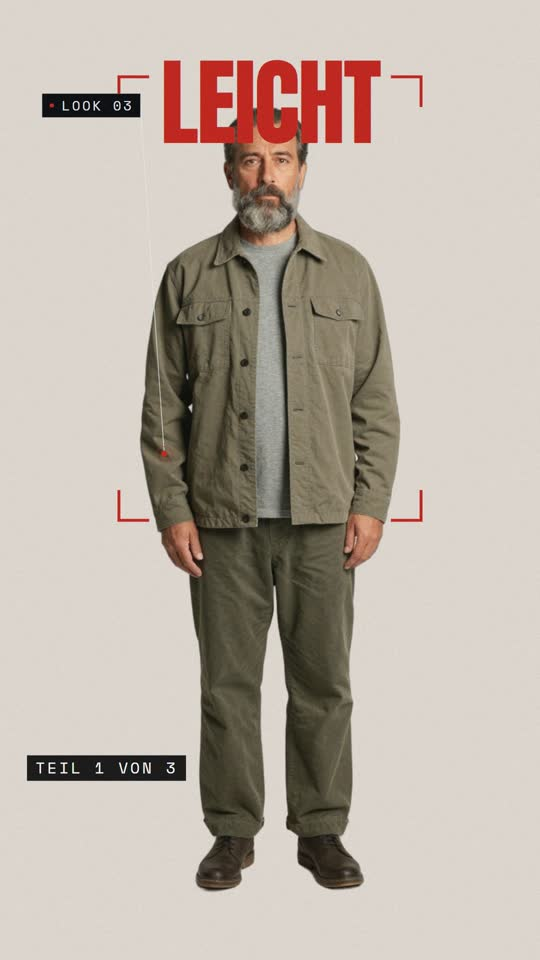
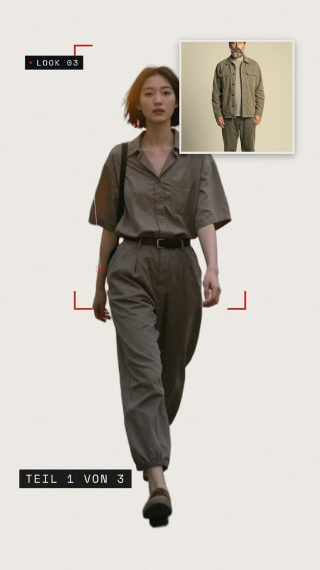
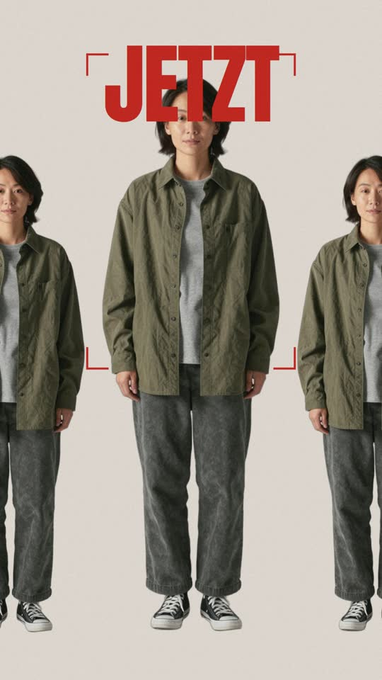
brauchtfotos-figurfootage-ortnur-typo
Aus einer Reihe von Outfits wird eines gewählt und dann Ort für Ort vorgeführt; eine riesige Schlagzeile tippt sich Buchstabe für Buchstabe als Selbstgespräch, Orte wechseln durch die Silhouette der Figur, Sticker-Klone stehen daneben.
Der Kern
Auswahl aus einer Reihe und dann ein Look an vielen Orten
Schlagzeile tippt Buchstabe für Buchstabe als innerer Monolog
Ortswechsel durch die Figur-Silhouette mit Sticker-Klonen
Format der Vorlage 9:16 · Kennung auswahl-lookbook
Beton-Fischauge
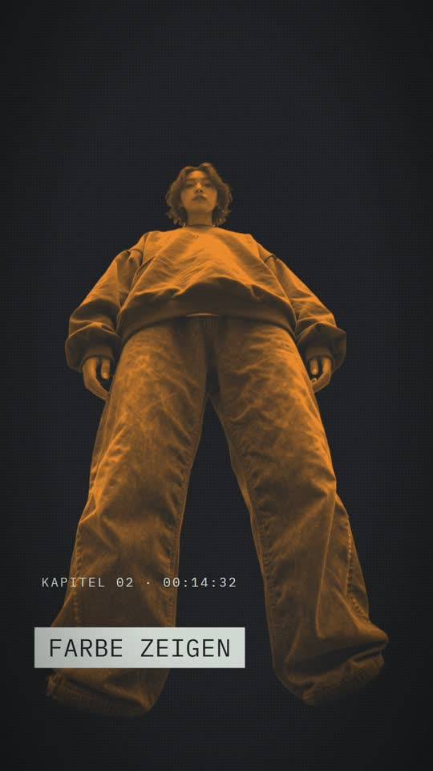
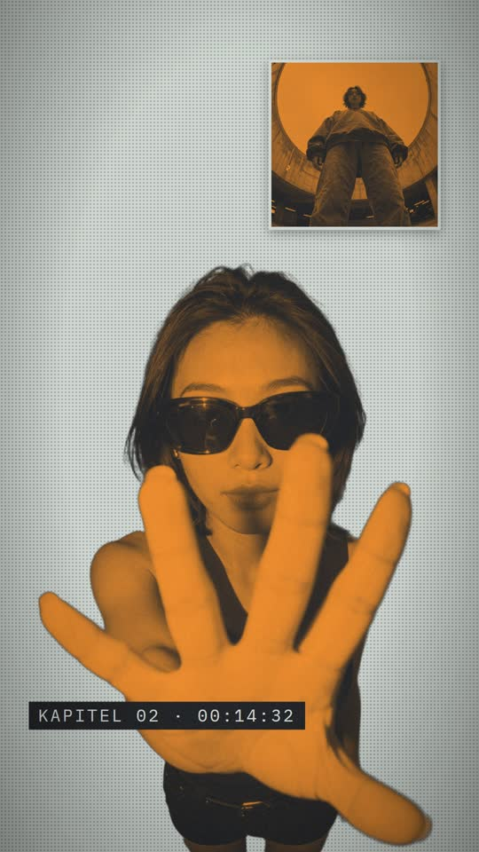
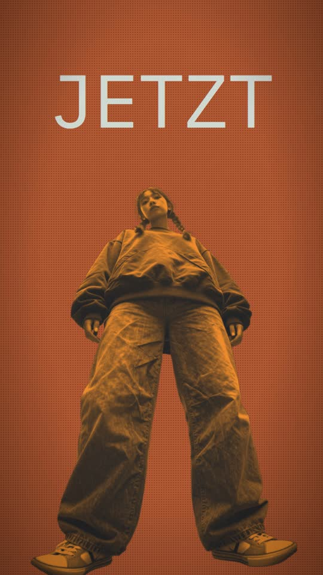
brauchtfotos-figurfootage-ort
Ein Look in grauer Betonarchitektur, fast nur mit Fischauge aus der Froschperspektive, kühler Analogfilm mit Korn, alle Drittelsekunde ein Schnitt, dazwischen Störbilder in Falschfarbe, Negativ, Rasterpunkt und Bewegungsecho, am Rand ein gedrehtes Datenblatt.
Der Kern
Fischauge aus der Froschperspektive in grauer Betonarchitektur
kühler Analogfilm mit kurzen Falschfarb- und Negativ-Störbildern
gedrehtes Datenblatt am Bildrand das sich tippt
Format der Vorlage 9:16 · Kennung beton-fischauge
Blaue Stunde flanieren
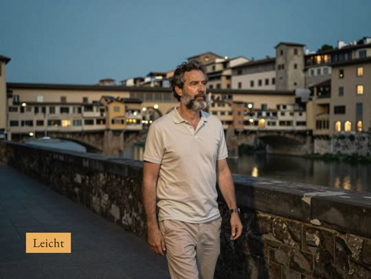
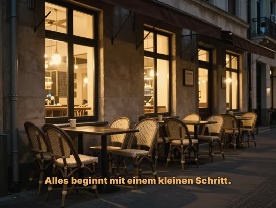
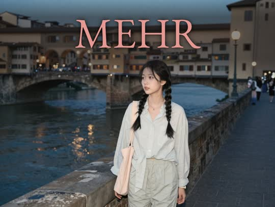
brauchtfotos-figurfootage-ort
Eine Figur schlendert in der blauen Stunde durch eine alte Stadt, lange ruhige Bilder der Figur wechseln regelmäßig mit kurzen leeren Orten (warmes Fenster, Wasser, Laterne), ohne Text, weich und filmisch.
Der Kern
Blaue Stunde mit warmen Fenstern und Laternen
fester Wechsel von Figur lang und leerem Ort kurz
ruhige Kamera mit Bokeh und ohne Text
Format der Vorlage 4:3 · Kennung blaue-stunde-flanieren
Drei Farbwelten
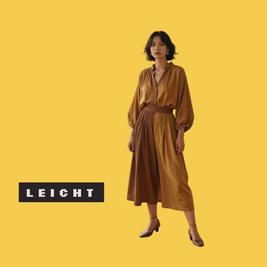
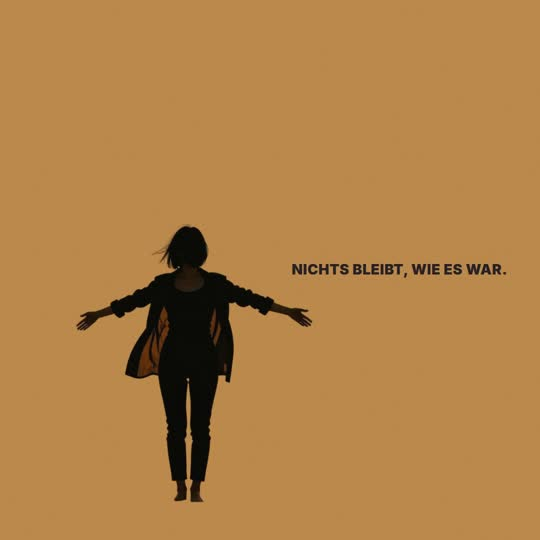
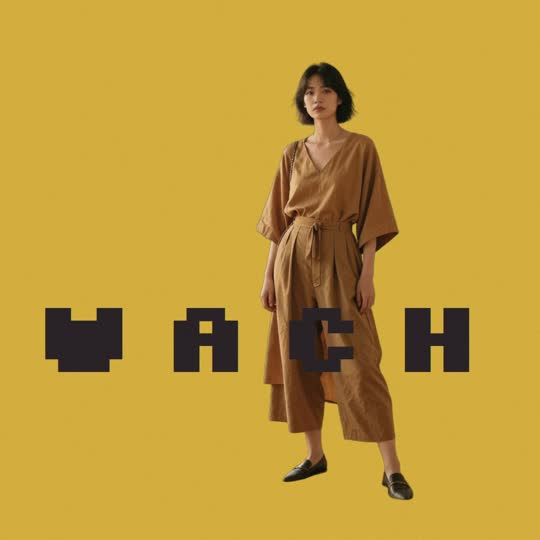
brauchtfotos-figurfootage-ortnur-typo
Ein Look wandert durch drei streng getrennte Farbwelten (goldene Wüste, blauer Tunnel, weißer Raum); jede Welt bekommt ein Etikett in Pixelschrift und ein Paar Foto-Kacheln, danach springen Kacheln über die Vollbilder und eine Sonnen-Silhouette setzt den Drop.
Der Kern
Drei getrennte Farbwelten Gold Blau Weiß mit demselben Look
Foto-Kacheln springen über das Vollbild
Etikett in Pixelschrift je Welt
Format der Vorlage 1:1 · Kennung drei-farbwelten
Dunkelkammer-Abzug
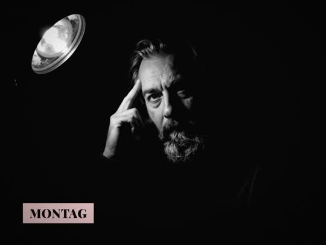
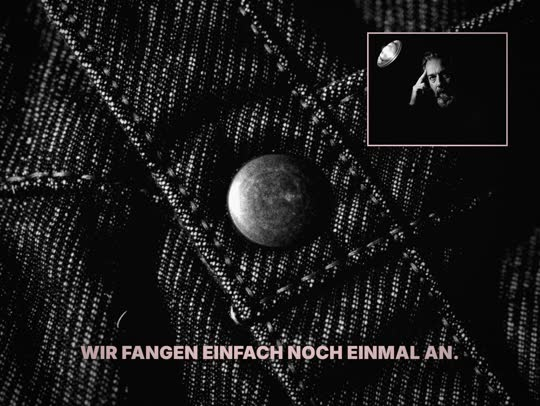
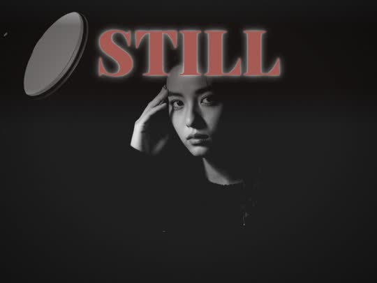
brauchtfotos-figurprodukt
Porträts und Kleidungsdetails in ochsenblutrotem Dunkel, dazwischen Material aus der Dunkelkammer (rosa Negative, Filmstreifen, gerissene Abzüge auf Papier) und Weißblitze; Stotter-Negative peitschen, Porträts stehen ruhig.
Der Kern
Ochsenblut-Dunkel mit rotem Licht auf dem Gesicht
Dunkelkammer-Material als Übergang mit Negativ Filmstreifen und Abzug
Stotter-Negative zwischen ruhigen Porträts
Format der Vorlage 4:3 · Kennung dunkelkammer-abzug
Farbfächer-Drehung
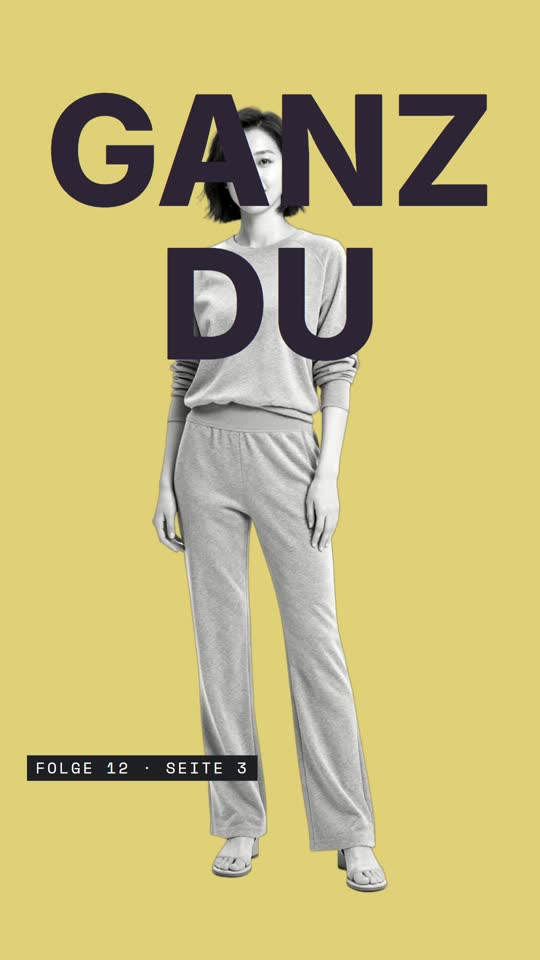
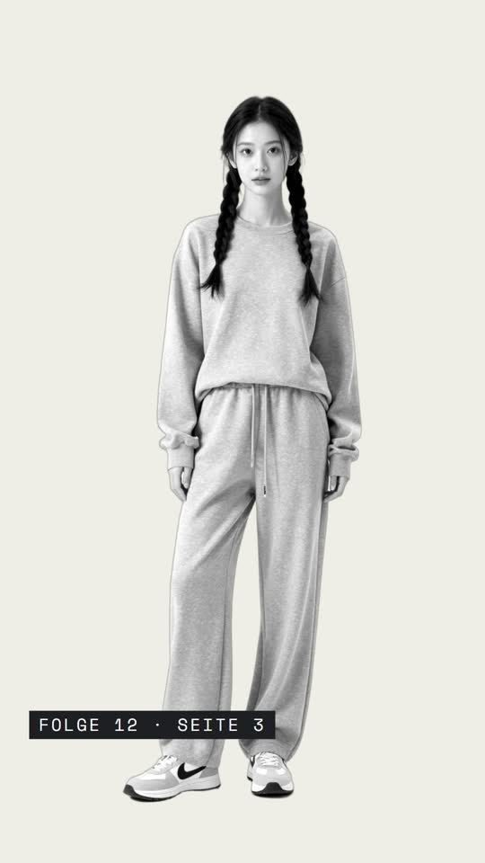
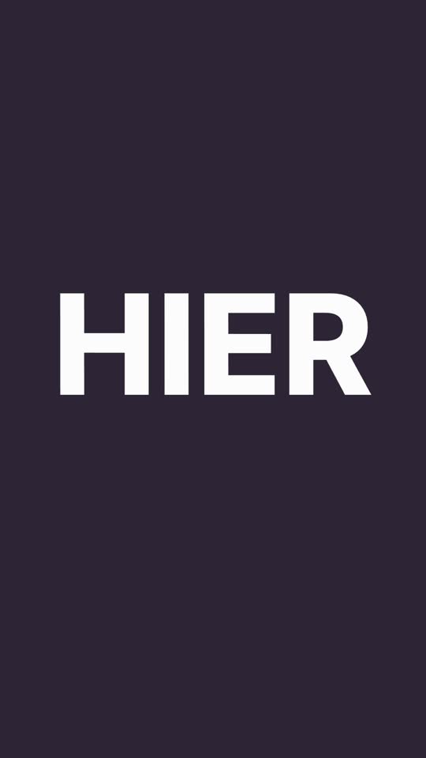
brauchtfotos-figurnur-typo
Eine Figur dreht sich auf Weiß, mit dem Rücken zur Kamera wechselt sie das Outfit, und von vorn erscheint sie in Farbe, eingerahmt von drei gekippten Farbmusterkarten und einem Farbfächer am Boden.
Der Kern
Figur dreht sich in Graustufen und kommt farbig mit neuem Outfit zurück
drei gekippte Farbmusterkarten mit Name und Farbcode als Palette des Outfits
Farbfächer als Halbkreis am Bildboden
Format der Vorlage 9:16 · Kennung farbfaecher-drehung
Goldene Nacht
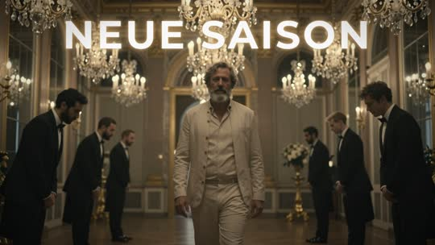
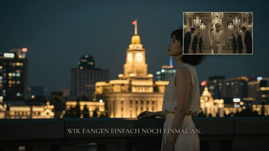
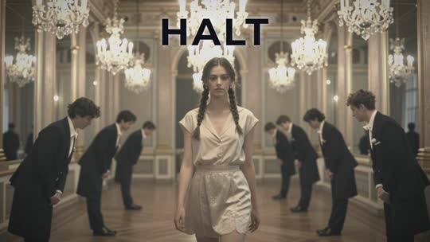
brauchtfotos-figurfootage-ort
Eine Figur im hellen Anzug zieht durch eine Großstadtnacht voller Gold und Nachtblau, Prachtsäle, roter Teppich und Cabrio, kinohaft und symmetrisch, mit wenigen kleinen Serifenwörtern wie Liedzeilen.
Der Kern
Nachtblau mit goldenem Kunstlicht und satten Schwarztönen
eine helle Figur als Mittelpunkt symmetrischer Prachtbilder
kleine Serifenwörter wie Liedzeilen in der Bildmitte
Format der Vorlage 16:9 · Kennung goldene-nacht
Guckloch und Weinstreifen
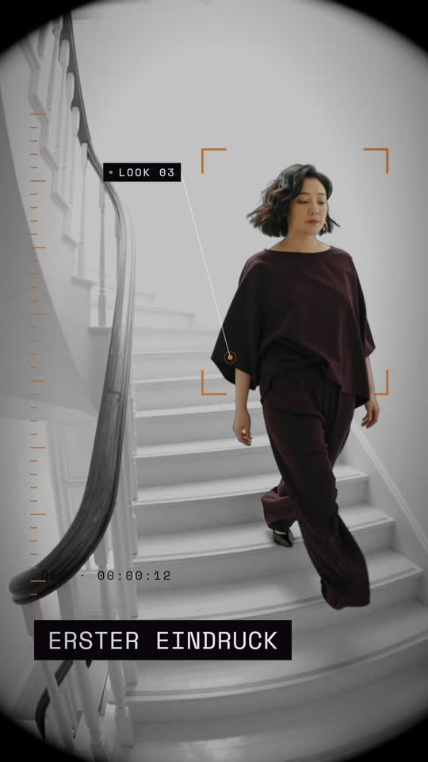
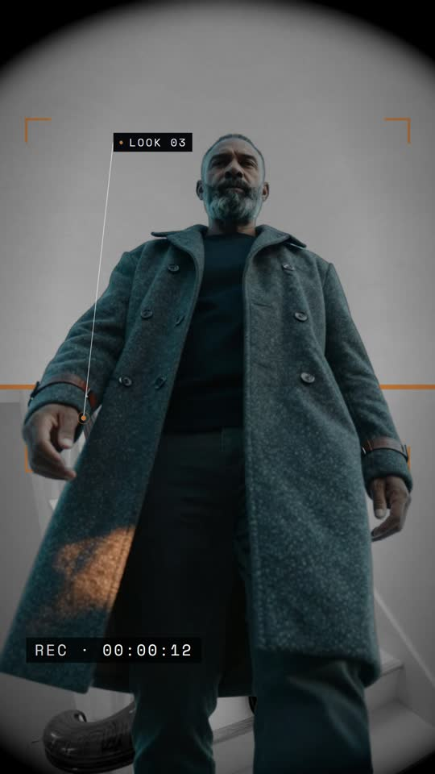
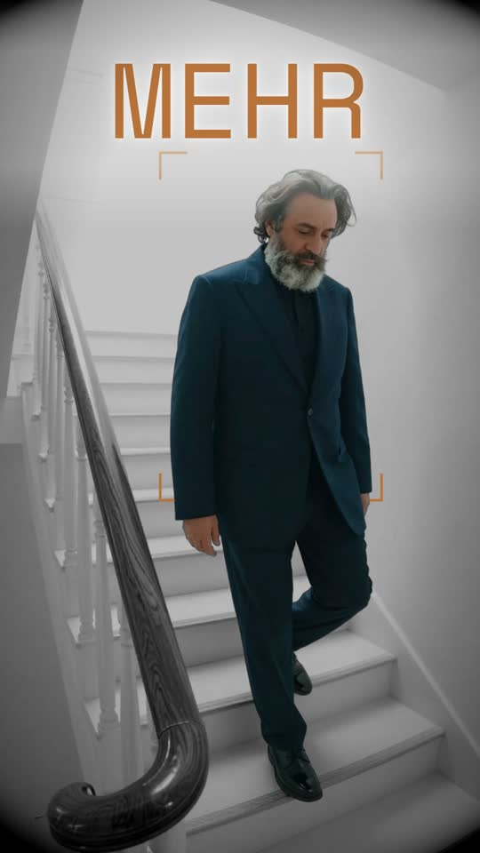
brauchtfotos-figurfootage-ort
Ein Look im hellen Treppenhaus und vor kaltem Himmel, gefilmt mit Fischauge; ein Streifen in der Farbe des Hauptstücks wischt diagonal durchs Bild und teilt es, dazwischen runde Guckloch-Bilder auf Schwarz und ein Kamerasucher.
Der Kern
Akzentstreifen in der Farbe des Hauptstücks als Wischer und Trennkante
rundes Guckloch auf Schwarz im Wechsel mit Vollbild
Fischauge in hellem Treppenhaus und vor kaltem Himmel
Format der Vorlage 9:16 · Kennung guckloch-weinstreifen
Kampagnen-Großschrift
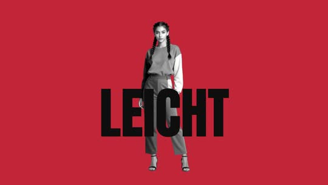
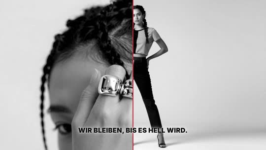
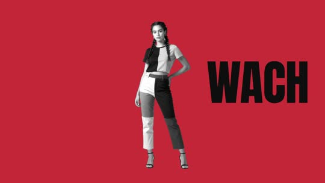
brauchtfotos-figurproduktnur-typo
Modekampagne aus flachen Signalfarben, riesiger schmaler Großschrift und Freistellern mit weißem Stickerrand, dazwischen Studio-Makros, ein Papierriss und ein Fischauge.
Der Kern
riesige schmale Versalien über zwei Zeilen mit überlappender Figur
flache Signalfarben ohne Textur
Freisteller und Produkte mit weißem Stickerrand
Format der Vorlage 16:9 · Kennung kampagnen-grossschrift
Kassenbon-Wechsel
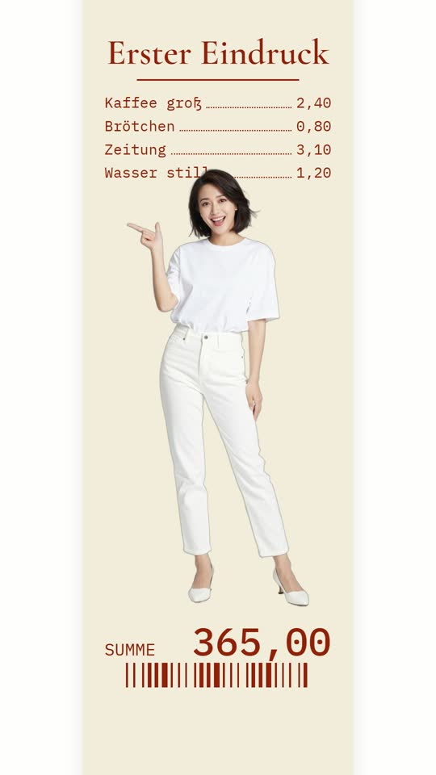
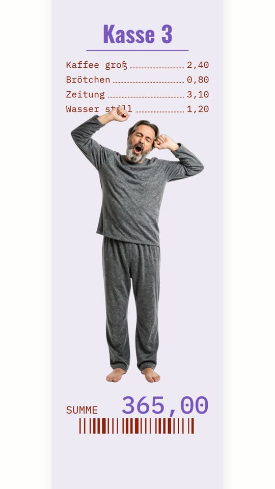
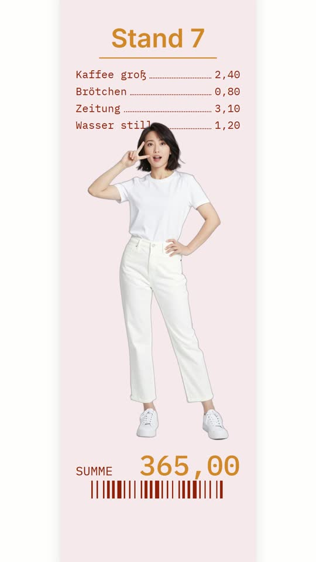
brauchtfotos-figurnur-typo
Eine müde Figur auf Weiß, dann rauscht sie per senkrechtem Wisch durch eine Reihe hochkanter Kassenbons und Speisekarten, jede in eigener Farbwelt, und trägt jedes Mal das passende Outfit.
Der Kern
schmaler hochkanter Bon oder Speisekarte mittig auf Weiß als Bühne
Outfit und Pose passen genau zur Farbwelt der Karte
senkrechter Wisch mit starker Unschärfe als einziger Übergang
Format der Vorlage 9:16 · Kennung kassenbon-wechsel
Kobalt und Kalk
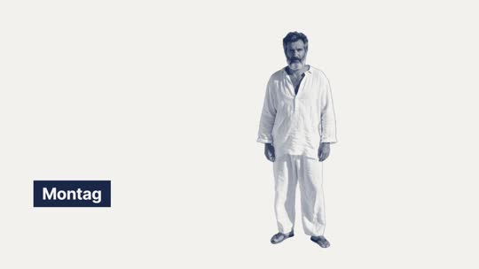
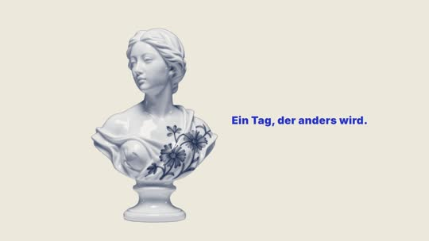
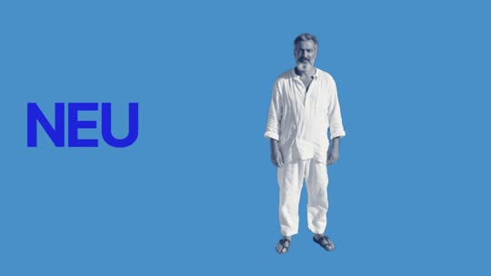
brauchtfotos-figurfootage-ortillustrationen
Eine Figur in hellem Leinen auf einer weißgekalkten Insel, nur Weiß und Kobaltblau, Makro-Details, Meer und Möwen wechseln mit kobaltblauen Blitzbildern, dazu ein selbstverliebtes Selbstgespräch in kleiner fetter Kleinschrift.
Der Kern
Nur Kalkweiß und Kobaltblau mit Meer
Makro-Details und Weite im Wechsel mit Kobalt-Blitzbildern
Selbstgespräch in kleiner fetter Kleinschrift Wort für Wort
Format der Vorlage 16:9 · Kennung kobalt-kalk
Laternen-Klone
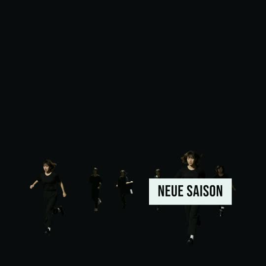
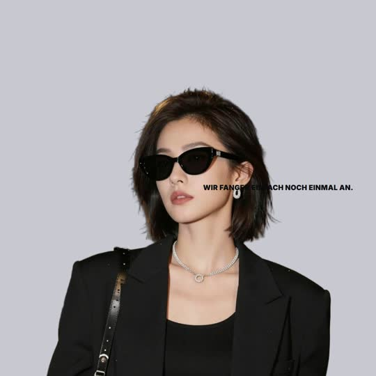
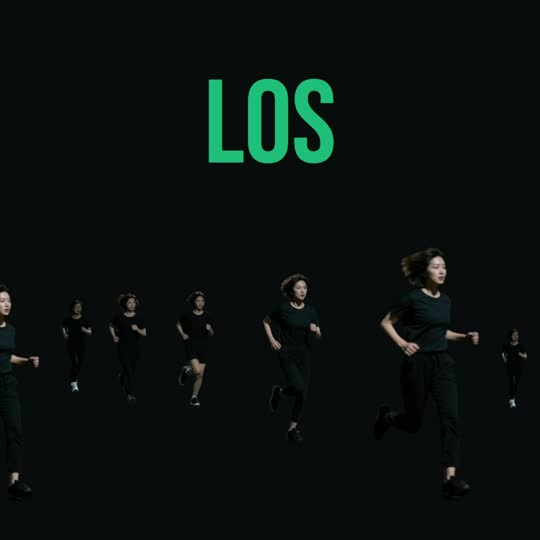
brauchtfotos-figurfootage-ort
Eine Figur in Schwarz mit glitzerndem Schmuck auf einer nächtlichen Straße unter einer Laterne, umgeben von ihren eigenen Klonen; Schnitt im Wechsel ein Schlag nah, zwei Schläge weit, nach einer Pause ein Abschnitt in grünem Licht, am Ende ein langes Porträt in Stille.
Der Kern
Eine Figur und ihre Klone auf nächtlicher Straße unter einer Laterne
Schnitt im festen Wechsel nah ein Schlag und weit zwei Schläge
grüner Farblicht-Abschnitt nach einer Pause
Format der Vorlage 1:1 · Kennung laternen-klone
Neunziger Anzug und Sport
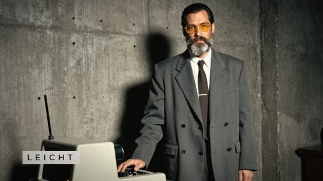
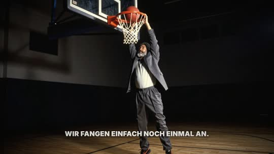
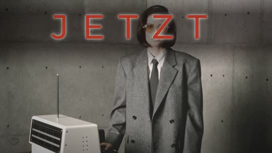
brauchtfotos-figurfootage-ortnur-typo
Eine Figur im weiten Anzug spielt allein in einer dunklen Halle Sport, gedreht wie ein Werbespot der späten Neunziger auf Diafilm (sattes Rot, getönte Brille, Spot von oben), getragen von Blitzbildern, Lichtstreifen und Untersichten unter dem Ziel.
Der Kern
Widerspruch aus formeller Kleidung und Sport als Laufsteg
Neunziger-Diafilm mit sattem Rot und tiefem Schwarz
Blitzbilder und Lichtstreifen als Übergang
Format der Vorlage 16:9 · Kennung neunziger-anzug-sport
Titelblatt-Zimmer
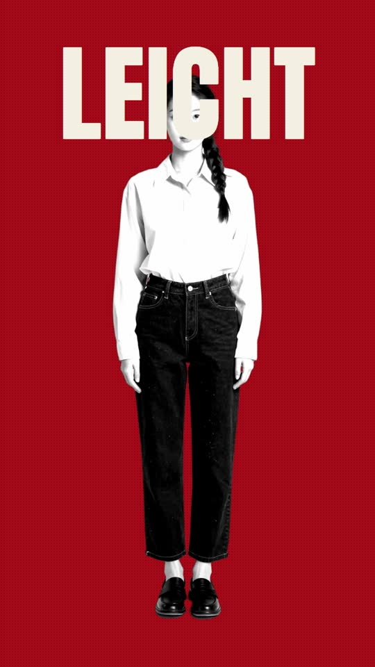
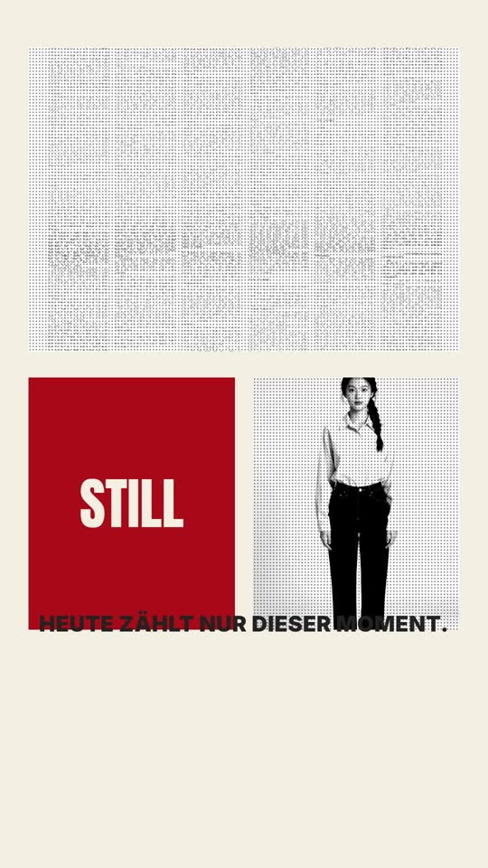
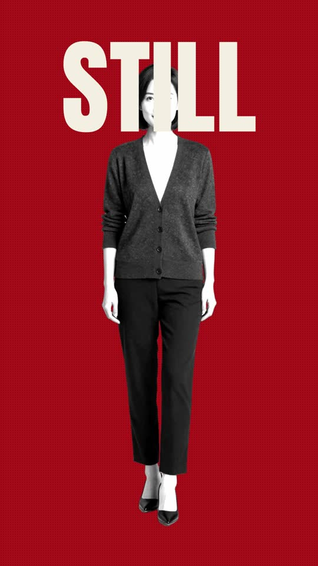
brauchtfotos-figurillustrationen
Ein Raum ganz aus Zeitungspapier, eine Person springt alle zwei Sekunden in ein neues Outfit, und jedes Outfit landet als Magazin-Titelblatt an der Wand.
Der Kern
Raum aus grauen Zeitungsseiten mit einzig farbiger Figur
Outfitwechsel als Sprung alle zwei Sekunden ohne Schnitt
jedes Outfit landet als Titelblatt an der Wand
Format der Vorlage 9:16 · Kennung titelblatt-zimmer
Weißblitz-Kampagne
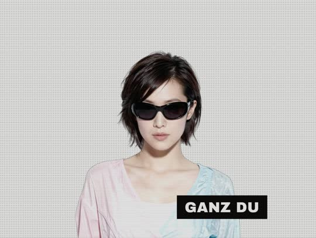
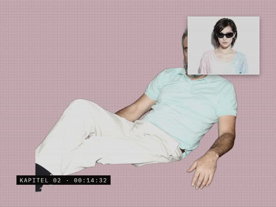
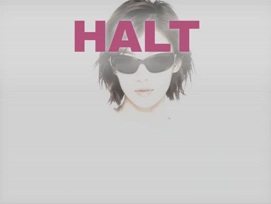
brauchtfotos-figurnur-typo
Überbelichtete Modefotos auf gleißendem Weiß in Rosa und Eisblau, gekippte Foto-Karten schweben im Raum, dazwischen Raster-, Zeilen- und Tiefenbild-Blitze und harte Wischer, dazu ein schwarzes Namensetikett.
Der Kern
überbelichtete Modefotos auf gleißendem Weiß in zwei Pastelltönen und Schwarz
Figur mit schwebenden gekippten Foto-Karten im Raum
Ein-Bild-Blitze in technischen Darstellungen zwischen den Fotos
Format der Vorlage 4:3 · Kennung weissblitz-kampagne
noir
11 Stile
Schwarzweiß oder fast farblos, harter Kontrast, viel Schatten. Ernst statt Spaß; die Spannung kommt aus Licht und Haltung, nicht aus Effekten. Regler: Helligkeit (abgesoffen bis überstrahlt), Akzent (keiner, ein rotes Requisit, Rotglut, Gold), Grafik (Mess-Overlay, Untertitel, Magazin-Layout, Kinobalken), Rhythmus (ruhig mit Störbildern bis Zwei-Frame-Stakkato). Einsatz: Motivation, Thriller-Erzählung, Personen-Vorstellung, ernste Nachrichten.
Chrom-Makro-Noir
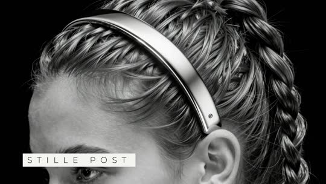
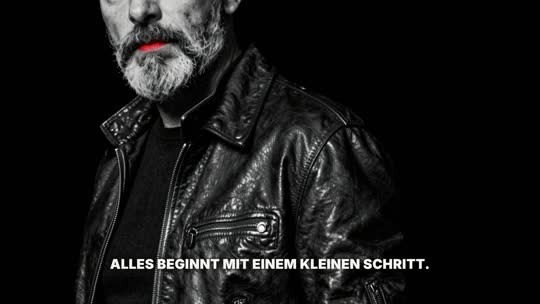
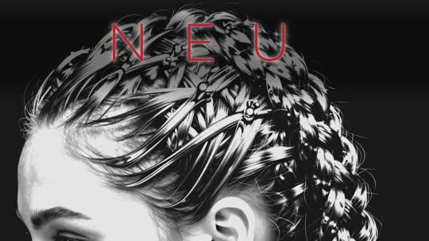
brauchtfotos-figurprodukt3d
Mode-Porträt in tiefem Schwarzweiß, geschnitten mit Makros aus gebürstetem Chrom, Lautsprechergittern und Wassertropfen; Papierweiß-Blitze und Zeilenrisse markieren die Schläge, nur die Lippen bleiben rot.
Der Kern
tiefes Schwarzweiß mit genau einem Rot auf Lippen und Licht
Chrom-Makros als Taktgeber zwischen den Porträts
Papierweiß-Blitze und horizontale Zeilenrisse als einzige Übergänge
Format der Vorlage 16:9 · Kennung chrom-makro-noir
Hochweiß Rotglut
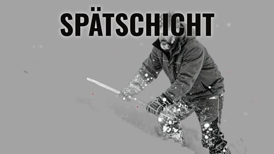
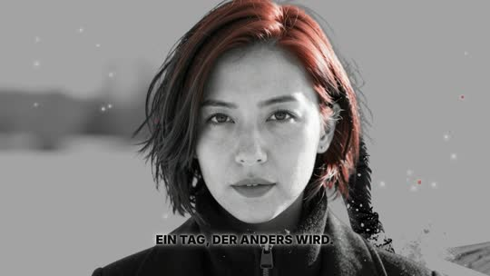
brauchtfootage-ortfotos-figur
Helles, fast weißes Schwarzweiß voller Bewegung, durchschossen von Bildern in glühendem Rot-Orange; Schnitte im Zwei-Frame-Stakkato auf einer Musikwand ohne Pause.
Der Kern
High-Key-Schwarzweiß mit Weiß als Grundfläche statt Schwarz
ganze Bilder als Rot-Orange-Verlaufskarte und Haar als einziger natürlicher Farbton
Zwei-Frame-Stakkato am Anfang und auf dem Höhepunkt mit ruhigen Porträts dazwischen
Format der Vorlage 16:9 · Kennung hochweiss-rotglut
Indizien-Vermessung
brauchtfootage-ortproduktnur-typo
Ruhige, fast farblose Einstellungen von Gegenständen und Orten in einem Rahmen mit runden Ecken, überzogen von einem Netz aus Messpunkten und gestrichelten Linien; leise Satzfetzen benennen die Indizien, nur Gold leuchtet.
Der Kern
lange ruhige Einstellungen um zwei Sekunden mit Schnitt auf dem Satz
Mess-Overlay aus Koordinaten-Etiketten und gestrichelten Linien über jedem Bild
entsättigte Kälte mit einem einzigen warmen Gold für das gesuchte Objekt
Format der Vorlage 16:9 · Kennung indizien-vermessung
Negativ und Zeitlupe
brauchtfootage-ortfotos-figur
Graustufen-Sportfilm in drei Texturen, erst rohes überbelichtetes Handkamera-Flackern mit Negativbildern, dann saubere Zeitlupe im Spotlicht mit einem stotternden Treffer, am Ende Sprungschnitte im Konfetti.
Der Kern
voller Grauwertumfang ohne jede Farbe mit leichtem Grünstich
Texturwechsel von roh und negativ zu sauber und langsam
Stotter-Sequenz auf dem Höhepunkt und Sprungschnitte im Schluss
Format der Vorlage 4:3 · Kennung negativ-zeitlupe
Neo-Noir-Steckbrief
brauchtfotos-figurfootage-ort3d
Eine Figur wird wie im Kinotrailer vorgestellt, in sehr dunklem Petrol mit Bernstein-Praktikallicht, Schnitt auf jeder Zählzeit, und am Ende steht nur ihr Name klein auf Schwarz über einem tiefen Bass-Schlag.
Der Kern
Farb-Noir in Petrol-Schatten und Bernstein-Lichtern bei sehr niedriger Helligkeit
gleichmäßiger Viertel-Schnitt zwischen Figur und Detail-Inserts
Namenskarte auf Schwarz mit Tiefbass und anschließender Stille
Format der Vorlage 16:9 · Kennung neonoir-steckbrief
Rotes Requisit
brauchtfotos-figurfootage-ortprodukt
Grobkörniges Straßen-Schwarzweiß mit hartem Kopflicht und schnellen, unregelmäßigen Schnitten, in dem ein einziger roter Gegenstand von Person zu Person wandert; am Ende landet das Rot auf der Haut und ein Tiefbass klingt aus.
Der Kern
körniges Schwarzweiß mit hartem Oberlicht und Blitz
ein roter Gegenstand als einzige Farbe der wie ein Staffelstab durch die Montage wandert
unregelmäßiges Schnitt-Stakkato von zwei bis zwölf Frames und ein langes Schlussbild mit Tiefbass
Format der Vorlage 4:3 · Kennung rotes-requisit
Sieger-Mantra
brauchtfotos-figurfootage-ortnur-typo
Schwarzweiß-Doku im Kinobalken, getragen von zwei Schriftstimmen, einer leisen kursiven Serif-Zeile und einem riesigen Schlagwort in Gelb oder Kobalt, auf einem Schlag je Takt.
Der Kern
Schwarzweiß im Kinobalken 2.39 mit nur zwei Tönungen Kobalt und Bernstein
zwei Schriftstimmen kursive Serif leise und schmale Grotesk riesig
ein Schlag mit Nachhall auf jedem Taktanfang und leise Strecken dazwischen
Format der Vorlage 16:9 · Kennung sieger-mantra
Störbild-Noir
brauchtfotos-figurfootage-ort
Ruhiges, hart beleuchtetes Schwarzweiß einer einzelnen Figur, durchbrochen von Ein-Frame-Störbildern (Kontur, Kachelzerfall, Streifenversatz, geschwärztes Rauschblatt) und kurzen Schwarzbildern, auf einem langsamen 60er-Puls.
Der Kern
reines Schwarzweiß mit einer Figur im Gegenlicht und harten Porträts
Störbilder von ein bis zwei Frames in fünf festen Sorten
Schwarzbilder als Satzzeichen auf einem langsamen Puls
Format der Vorlage 1.41:1 · Kennung stoerbild-noir
Tiefschwarz-Datamosh
brauchtfotos-figurfootage-ort
Schwarzweißes Nachtmaterial, drei Viertel des Bildes abgesoffen, dazwischen ausgebrannte Weißflächen, Weitwinkel und verschmierte Kompressionsfehler; endet auf einem Auge und langer Schwärze.
Der Kern
abgesoffenes Schwarzweiß mit Ausreißern ins ausgebrannte Weiß
Datamosh-Schmieren als Übergang und Textur
Weitwinkel nah am Motiv
Format der Vorlage 4:3 · Kennung tiefschwarz-datamosh
Titelblatt-Noir
brauchtfotos-figurnur-typo
Mode-Porträt in Schwarzweiß als bewegtes Magazin, Titelseiten-Layouts, rote Rahmen, Riesenwörter hinter der Figur, Fotos auf einem Perspektivraster und eine Collage, in der rote Buchstaben im Takt einschlagen; Rot ist hier zweite Hauptfarbe, nicht nur Akzent.
Der Kern
Schwarzweiß-Fotos in Magazin-Layouts mit Signalrot als großer Fläche
Typografie als Hauptdarsteller mit Wortechos Riesenwörtern und Buchstaben im Takt
Grafikbühnen wie Perspektivraster Schallplatte Kreismaske und Lichtstrahl mit Wellenring
Format der Vorlage 4:3 · Kennung titelblatt-noir
Untertitel-Thriller
brauchtfotos-figurfootage-ortnur-typo
Ein erzählter Psychothriller in tiefem Schwarzweiß, Nebel, Regen und Gegenlicht, getragen von kleinen Untertiteln, die sich wie auf einer Schreibmaschine aufbauen, und von Fragetiteln, die sich aus Zeichensalat entschlüsseln; ruhige Einstellungen um zwei Sekunden.
Der Kern
Schwarzweiß-Thriller mit Nebel Regen und Gegenlicht in ruhigen Einstellungen um zwei Sekunden
Erzählung als kleine Schreibmaschinen-Untertitel am unteren Rand
Fragetitel mit RGB-Saum die sich aus Zeichensalat entschlüsseln und kurze Glitch-Übergänge
Format der Vorlage 16:9 · Kennung untertitel-thriller
musikvideo
9 Stile
Das Lied bestimmt alles: Schnitt auf dem Beat, Performance im Bild, oft Liedzeilen als Typo. Regler: Besetzung (eine Figur, Gruppe, viele Performer), Farbwelt (eine pro Shot, Duoton, Pastell, Neon-3D), Effektdichte (keine bis ein Effekt je Shot), Text (keiner, Lyric-Typo, Tracking-Etiketten). Einsatz: Musikvideos, Lyric-Clips, Bühnen-Momente.
Anime-Lichtwechsel
brauchtillustrationen
Eine Anime-Sängerin auf dunkler Bühne, jede Einstellung in einer anderen Lichtfarbe (Silber, Rot, Türkis, rote Gegenlicht-Silhouette), nach einem langen ruhigen Einstieg immer schneller geschnitten.
Der Kern
eine Figur in sechs bis acht festen Einstellungsgrößen
jede Einstellung mit eigener Lichtfarbe
langer Einstieg und danach Beschleunigung mit weißen Blitzbildern
Format der Vorlage 1:1 · Kennung anime-lichtwechsel
Blaulicht-Tracking
brauchtfotos-figurnur-typo
Performance-Porträt komplett in einer Blau-Verlaufskarte mit starkem Überstrahlen, über das ein Tracking-Overlay mit Liedwörtern in kleinen Etiketten läuft; dazwischen riesige Wörter aus Wellenlinien und leuchtende Augen als wiederkehrendes Motiv.
Der Kern
Blau-Monochrom mit Überstrahlen in dem Schmuck und Augen zu Lichtquellen werden
Tracking-Boxen mit Liedwörtern an Körperpunkten auf fast jedem Bild
Riesenwörter mit Wellenlinien-Füllung als Schlagzeilen
Format der Vorlage 4:3 · Kennung blaulicht-tracking
Bonbon-Lyric-Bühne
brauchtfotos-figur3dnur-typo
Eine freigestellte Person tanzt und springt durch knallbunte 3D-Welten aus Glaswürfeln, Neonschläuchen und Sternen, die Liedwörter stehen als glänzende Bonbon-Buchstaben im Raum, zum Schluss blinkt der Hintergrund im Sechzehntel durch alle Farben.
Der Kern
Liedwörter als glänzende 3D-Bonbonbuchstaben im Raum (vor und hinter der Figur)
freigestellte reale Person in gerenderten Neonwelten
Tempo zieht bis zum Farbstrobo am Ende an
Format der Vorlage 16:9 · Kennung bonbon-lyric-buehne
Gruppentanz im Kulissenwechsel
brauchtfotos-figurfootage-ort
Eine Tanzgruppe in knallbunten, ständig wechselnden Kulissen, vier Schnitte je Sekunde, Formation und Einzelgesicht im Wechsel, verbunden durch verwischte Reißschwenks; kein Text, keine Effekte, nur Tanz, Farbe und Tempo.
Der Kern
jede Einstellung eine neue Kulisse in eigener Volltonfarbe
Wechsel von Formation (ganze Gruppe) und Einzelgesicht (ein Mitglied blickt in die Kamera)
Reißschwenk mit Bewegungsunschärfe als einziger Übergang neben dem harten Schnitt
Format der Vorlage 16:9 · Kennung gruppentanz-kulissenwechsel
Idol-Effektgewitter
brauchtfotos-figurfootage-ortnur-typo
Bunte Bühnen- und Porträtbilder einer Sängerin, im Halbsekundentakt geschnitten und mit wechselnden Effekten überfahren: rote Liedwörter auf dem Gesicht, Zoom-Explosion, 1-Bit-Bild mit Tracking-Rahmen, Strahlenkranz, Rotfilter.
Der Kern
jeder zweite bis dritte Shot bekommt einen anderen Effekt (kein Effekt wiederholt sich direkt)
große rote Liedwörter liegen direkt auf Gesicht und Körper
Wechsel zwischen satter Bühnenfarbe und hartem 1-Bit mit Messrahmen
Format der Vorlage 4:3 · Kennung idol-effektgewitter
Pastell-Ornamentschleife
brauchtfotos-figurillustrationen
Weiche Nahaufnahmen einer Sängerin in milchigem Lavendel und Eisblau, umrankt von weißen Linienornamenten (Ranken, Schmetterlinge, Noten, Notenlinien), getrennt von Weißblüten; die zweite Hälfte wiederholt die erste Bildfolge wie eine Schleife.
Der Kern
milchiger Pastell-Look ohne echtes Schwarz (Lavendel
Eisblau
Rosa)
weiße Linienornamente als Rahmen und Overlay je Shot
Weißblüte als Übergang und Bildfolge
die sich als Schleife wiederholt
Format der Vorlage 4:3 · Kennung pastell-ornamentschleife
Rockheld kopfüber
brauchtfotos-figurfootage-ort
Eine einzige Heldenfigur in gedämpftem Kinolook, eröffnet mit schreienden Fisheye-Nahaufnahmen im Zehntelsekundentakt, dann Silhouetten vor Lichtportalen, Stunts, kopfüber gedrehte Bilder und Reißschwenks bis zur Pose mit erhobenen Armen vor dem Sonnenuntergang.
Der Kern
eine Figur in vielen Lagen (Schrei
Stille
Stunt
Silhouette)
gedämpfter Kinolook mit tiefem Schwarz und warmem Gegenlicht
Bilder kopfüber oder gekippt plus Reißschwenks als Rock-Geste
Format der Vorlage 16:9 · Kennung rockheld-kopfueber
Untersicht-Hype-Reigen
brauchtfotos-figurfootage-ort
Viele verschiedene Performer in Weitwinkel-Untersicht, jeder in seiner eigenen Farbwelt, gerahmt wie ein 16-mm-Bild mit runden dunklen Ecken; es beginnt mit einem Sechzehntel-Gewitter erhobener Arme und ruht dann auf einzelnen Gesichtern.
Der Kern
Weitwinkel von unten
nah am Körper
Hände greifen in die Linse
jede Einstellung eine eigene Farbwelt (Sonnenuntergang
Petrol
Rot
Pink
Schwarzweiß)
16-mm-Gefühl mit Korn und abgerundeter Vignette
Format der Vorlage 4:3 · Kennung untersicht-hype-reigen
Violett-Lyric im Duoton
brauchtfotos-figurnur-typo
Kinetisches Lyric-Video in Violett und Fast-Schwarz: eine freigestellte Sängerin im Duoton, riesige fette Versalwörter hinter ihr, kursive Serifenwörter mit Bewegungsunschärfe, Buchstaben als Fenster ins Video und magentafarbene Kreise statt der Os.
Der Kern
zwei Farben plus ein Akzent (Violett
Fast-Schwarz
Magenta-Kreis)
Schriftpaar aus fetter Versal-Grotesk und kursiver Serife je Zeile
Figur und Wort verschränkt (Wort hinter der Figur
Video in den Buchstaben
Gesicht im O)
Format der Vorlage 4:3 · Kennung violett-lyric-duoton
aura-portrait
9 Stile
Eine Hauptfigur wird überhöht: Blick, Haltung, ein Satz. Der Drop ist der Moment, in dem die Figur „ankommt“. Regler: Farbe (Teal mit Glut, Giftgrün, Abendblau, Tintenblau auf Weiß, Goldlicht), Grafik (Erkennungs-Overlay, Wortflanken, Untertitel), Material (Handyclip bis Kinobild). Einsatz: Kanal-Gesicht vorstellen, Zitat mit Figur, Hook.
Anzug-Monolog
brauchtfotos-figurfootage-ort
Eine Figur im Anzug redet selbstbewusst in die Kamera, Wort für Wort untertitelt, Schlüsselwörter groß in Glasschrift; nach dem Monolog kippt es in eine schnelle Montage derselben Figur in vielen Büroszenen.
Der Kern
Erst Monolog mit Wort-Untertiteln dann Montage
eine Figur im immer gleichen Anzug durch viele Szenen
Schlüsselwörter groß in Glasschrift über der Figur
Format der Vorlage 4:3 · Kennung anzug-monolog
Augenbalken-Grünnacht
brauchtfotos-figurfootage-ort
Handkamera-Nacht in olivgrünem Laternenlicht, eine Figur meist von hinten oder mit verdeckten Augen, unterbrochen von Röntgenbild, Schlüsselloch und einem Negativ mit leuchtend roten Augen im Balken; am Drop ein einzelnes rotes Serifenwort.
Der Kern
olivgrüne Natriumlicht-Nacht mit Handy-Handschrift
Augen als Ziel jedes Effekts mit Augenbalken im Negativ Röntgen und Schlüsselloch
Aufbau bis zum Drop und Schluss mit rotem Serifenwort auf Schwarzweiß
Format der Vorlage 4:3 · Kennung augenbalken-gruennacht
Erkennungs-Porträt
brauchtfotos-figurnur-typo
Eine einzige gehaltene Einstellung einer Figur in Abendblau, über die ab dem Drop ein Erkennungssystem läuft (Negativ-Streifen mit Suchmeldung, Datenspalte, Kreuz, Wärmebild-Kipp), während Wortpaare in Pink links und rechts am Kopf vorbei stehen.
Der Kern
ein gehaltenes Porträt statt Bildwechsel mit vier Sekunden Aufbau vor dem Drop
Erkennungs-Overlay aus Negativ-Streifen Datenspalte Kreuz und Wärmebild-Kipp in festem Zyklus
Wortpaare in fettem Pink deren Mitte der Kopf verdeckt
Format der Vorlage 16:9 · Kennung erkennung-portraet
Funken-Aura
brauchtproduktfotos-figurfootage-ort
Status-Montage aus Glanzobjekten, Fahrzeugen und grinsenden Gesichtern in kaltem Teal-Monochrom, in das rot-orange Glut, Funkenregen, Blitze und Lichtstreifen einschlagen; Schnitte im Zwei-Frame-Takt auf einer lauten Wand.
Der Kern
Teal-Monochrom als Grundton mit Glut-Einschlägen in Rot-Orange
Funken Blitze und Lichtstreifen als gezeichnete Energie auf jedem zweiten Bild
Zwei-Frame-Salven zwischen kurzen Haltepunkten und ein langer Schlussgegenstand
Ein Hauptfiguren-Edit ganz in Schwarz und Giftgrün, mit Kontaktstreifen, Fingerabdruck-Silhouetten, Tracking-Linien und Weitwinkel von unten, im Zwei-Frame-Takt bis zum glühenden Titelwort.
Der Kern
Grün-Duoton von Schwarz bis Blassgrün mit invertierten Blitzen
Einzelbild-Stakkato um 0
1 s mit Kontaktstreifen-Ketten
Titelwort am Ende von grauer Kontur zu Neongrün
Format der Vorlage 4:3 · Kennung giftgruen-stakkato
Hauptfigur-Wende
brauchtfotos-figurfootage-ortnur-typo
Hochformat-Handyclip im grauen Tageslicht, eine Figur im eigenen Garten aus Froschperspektive und Weitwinkel, erst untertreibend betextet, dann kippt es auf dem Drop in große kursive Behauptungen und Viertel-Schnitt; Polaroid-Stapel, Freisteller auf Schwarz und Dreifach-Bild als Würze.
Der Kern
Alltag im Tageslicht mit Weitwinkel von unten und von oben statt Kinolook
Textdramaturgie aus Untertreibung Frage und Behauptung mit dem Drop genau auf dem Hauptwort
Halbe-Schnitt vor dem Drop und Viertel-Schnitt danach
Format der Vorlage 9:16 · Kennung hauptfigur-wende
Sportheld mit Kinobalken
brauchtfotos-figurfootage-ort
Spielszenen eines Sporthelden in entsättigtem Petrol-Grün mit schwarzen Kinobalken, grobem Korn und winzigen Tracking-Koordinaten, unterbrochen von dunklen Nachtfahrt-Zwischenbildern, ausgebrannten Weißbildern und einem 1-Bit-Moment; am Ende funkeln Sterne im Schwarz.
Der Kern
eine Hauptfigur als Held aller Spielszenen
kalter
abgesoffener Kinolook mit Kinobalken und Korn
Wechsel von Aktion und dunklem Zwischenbild als Atem
Format der Vorlage 4:3 · Kennung sportheld-kinobalken
Tinte auf Weiß
brauchtfotos-figurnur-typoillustrationen
Helles Lyric-Porträt auf fliederweißem Grund, Silhouetten in tiefem Tintenblau, pastellige Beauty-Makros und Liedwörter in schmaler Grotesk mit Chrom-Füllung, die hinter Gesicht und Schmuck liegen; zwei Stroboskop-Salven zwischen Silhouette und Titelkarte.
Der Kern
High-Key mit Fliederweiß als Grund und Tintenblau als einziger Dunkelheit
Liedwörter Wort für Wort in schmaler Grotesk mit Chrom-Verlauf und teils hinter dem Motiv
Viertel-Schnitt mit zwei Stroboskop-Salven aus Silhouette und Titelkarte
Format der Vorlage 16:9 · Kennung tinte-auf-weiss
Wortflanke Goldstunde
brauchtfotos-figurfootage-ortnur-typo
Heldenplakat im Gegenlicht der tiefen Sonne, eine Figur in kühler Kleidung vor warmer Weite, die Kamera driftet langsam zurück; ab dem Drop stehen Liedzeilen als pinke Wortpaare beidseits des Kopfes, kurz unterbrochen von kalten Negativ-Streifen und einem Glutkipp.
Der Kern
helles Goldlicht fast ohne Schwarz mit kühler Kleidung als Gegenfarbe
langsame Drift der Kamera über ein einziges gehaltenes Plakatbild
lang stehende Wortpaare beidseits des Kopfes mit nur einem kurzen Scan je Zeile
Format der Vorlage 16:9 · Kennung wortflanke-goldstunde
auto-beat
9 Stile
Fahrzeuge im Takt: Lack, Licht, Geschwindigkeit, Makros von Details. Fast immer Bewegungsunschärfe und Blitzbilder auf dem Schlag. Regler: Licht (Studio-Lichtkante, Abendpass, Nacht mit Farbkipp, Glutorange), Epoche (Sechziger, Nullerjahre, heute), Grafik (Mess-HUD, Slogan im Raum, Countdown), Erzählung (reine Montage bis Dialog-Pointe). Einsatz: Spielzeugautos, Fahrzeug-Features, Tempo-Hooks.
Boxengassen-Pointe
brauchtfotos-figurfootage-ortprodukt
Zwei Figuren liefern sich an der Rennstrecke einen kurzen Wortwitz mit großen Untertiteln neben dem Kopf, dann schlägt die Musik ein und ein Kinotrailer-Rennen folgt, dessen Bilder durch schmale Bänder und Fenster ins Bild fallen.
Der Kern
Dialog-Pointe mit großen Untertiteln neben dem Kopf und einem roten Wort
harter Umschlag in ein Kinotrailer-Rennen
neue Bilder fallen durch Bänder und Fenster ins Bild
Format der Vorlage 16:9 · Kennung boxengassen-pointe
Burnout-Countdown
brauchtfootage-ortfotos-figurnur-typo
Körniger Nullerjahre-Film über Straßenrennen, Reifenqualm und tanzende Menge, eröffnet mit einem leuchtenden 3-2-1 neben Gesichtern, danach leuchtende Einwortbefehle mit Punkt und eine schmutzige Titelkarte zum Schluss.
Der Kern
übersättigter
körniger Nullerjahre-Filmlook mit tiefem Himmelblau und zugelaufenem Schwarz
leuchtender Countdown und Einwortbefehle mit Punkt in Weiß mit Glühen
Wechsel aus Maschine (Auto
Motorrad
Qualm) und Menschen (Menge
Tanz
Sprung)
Format der Vorlage 3:2 · Kennung burnout-countdown
Farbkey mit Zielerfassung
brauchtproduktfootage-ortnur-typo
Schwarzweiß-Bilder eines Fahrzeugs, nur sein Lack leuchtet in einer Farbe, dünne Messlinien und ein Zielrahmen erfassen es wie ein Scanner, schräge Kamera und dreifach gestapelte Makros auf einem harten Beat.
Der Kern
Schwarzweiß mit genau einer Farbe auf dem Lack
dünnes Mess-HUD mit Linien und Zielrahmen
schräge Kamera und gestapelte Dreifach-Makros
Format der Vorlage 9:16 · Kennung farbkey-zielerfassung
Goldene Passfahrt
brauchtfootage-ortprodukt
Ein Fahrzeug auf leerer Bergstraße im Abendlicht, Luftbild, Verfolgung und Hand am Bedienelement wechseln ruhig auf jedem Schlag eines satten, langsamen Grooves.
Der Kern
Goldene Stunde in weiter Landschaft
ein Schnitt je Schlag bei ruhigem Tempo
Wechsel zwischen Außenweite und Hand am Bedienelement
Format der Vorlage 16:9 · Kennung goldene-passfahrt
Lichtkante im Studio
brauchtprodukt3dnur-typo
Ein Fahrzeug in tiefem Lack auf Schwarz, ein einzelner Lichtstreif läuft über seine Kanten, Makros von Rad, Instrument und Leuchte springen im Sechzehntel nach einer langen dunklen Atempause.
Der Kern
Schwarzer Raum mit nur einer wandernden Lichtkante
eine einzige satte Lackfarbe als Farbe des Stücks
lange dunkle Titelpause und danach Makro-Stakkato
Format der Vorlage 16:9 · Kennung lichtkante-studio
Nachtfahrt Farbkipp
brauchtfootage-ortfotos-figur
Schwarzweiß im harten Blitzlicht, das genau auf dem Bass-Einsatz in Nachtfarbe aus Petrol und Rücklichtrot kippt; Lichter sind das eigentliche Motiv, am Ende frisst ein Weißblitz alles und Schwarz steht mit einem Tiefbass-Schlag.
Der Kern
Schwarzweiß-Auftakt kippt auf dem Drop in Farbe
Lichtquellen als Motiv in Rot und Petrol auf fast schwarzem Grund
Achtel-Schnitt mit Weißblitzen und langer Schwarz-Schluss mit Tiefbass
Format der Vorlage 16:9 · Kennung nachtfahrt-farbkipp
Rennfieber-Epos
brauchtfootage-ortfotos-figurprodukt
Kinobreite Rennmontage in Glutorange und Petrol, Fahrzeugbilder mit glühenden Lichteffekten wechseln im Puls von 0,7 s mit Gesichtern in Anspannung, Qual und Jubel, bis das Fahrzeug durch eine Feuerwand bricht.
Der Kern
Kinoformat mit Glutorange gegen Petrol
Fahrzeug-Spektakel im Wechsel mit Gesichtern im Extremgefühl
gleichmäßiger Puls von 0.7 s mit Atem vor dem Drop
Format der Vorlage 21:9 · Kennung rennfieber-epos
Rennstrecken-Slogan
brauchtfotos-figurfootage-ortproduktnur-typo
Eine Fahrerin als Modefigur an einer leeren Rennstrecke, ein Slogan baut sich Wort für Wort in den Raum hinein, erst langsam im goldenen Abendlicht, nach dem Drop schnell in Teal-Nacht mit Rennwagen, Cockpit und einem bildfüllenden Riesenwort.
Der Kern
Slogan Wort für Wort in den Raum gesetzt
langsamer goldener Auftakt und schneller Teal-Nachtteil nach dem Drop
Fahrerin als Modefigur zwischen Rennwagen und Cockpit
Format der Vorlage 4:3 · Kennung rennstrecken-slogan
Sechziger-Hafenrennen
brauchtfotos-figurfootage-ortprodukt
Ein Gentleman-Fahrer im Stil der Sechziger, ein alter Rennwagen auf einem Stadtkurs am Hafen, warmes Creme, Ocker und Weinrot, schnelle Schnitte von Handschuh, Helm, Kurve und Feier, Bilder kippen kurz in Schwarzweiß, ein roter Streifen wischt durch.
Der Kern
Sechziger-Filmlook in Creme Ocker und Weinrot
Stil-Details des Fahrers im Wechsel mit Rennbildern im Drittelsekunden-Takt
dasselbe Bild kippt kurz in Schwarzweiß
Format der Vorlage 16:9 · Kennung sechziger-hafenrennen
scrapbook
8 Stile
Handgemachtes über echtem Material: Papierränder, Sticker, Kritzel, Marker, Collage, Zine-Raster. Die Kamera steht meist, die Hand ist die Bewegung. Regler: Material (Fotos, Alltagsvideo, Mode-Footage), Handarbeit (Kugelschreiber, Marker, Ölkreide, Zeitungsausschnitt, Papiertheater), Farbe (Pastell bis satte Druckfarben), Tempo (Fotos im Viertel bis Kochen auf Zweiern). Einsatz: Alltag, Erinnerung, Familie, Rezepte, persönliche Geschichten.
Fotostapel im Weißraum
brauchtfotos-figurfootage-ort
Analoge Blitzfotos landen im Viertel-Takt auf einer leeren weißen Seite und stapeln sich, darüber steht die ganze Zeit eine kleine gelbe Serifenzeile in der Bildmitte.
Der Kern
leere weiße Seite als Bühne
Fotos stapeln sich auf dem Viertel statt sich abzulösen
eine feste kleine Serifenzeile in Gelb als oberste Ebene
Format der Vorlage 9:16 · Kennung fotostapel-weissraum
Kiez-Kritzel
brauchtfotos-figurfootage-ortillustrationen
Warme, körnige Straßenaufnahmen einer Figur und ihres Viertels, überzeichnet mit weißen Handkritzeln und lila Markerstrichen, dazu Filmstreifen-Raster und Fotos auf zerknittertem Papier.
Der Kern
warmer Filmlook mit Korn auf echten Stadtaufnahmen
weiße Kritzel
die sich auf dem Bild zeichnen (Krone
Kreis
Pfeil
Schallwellen)
eine Akzentfarbe aus der Kleidung wandert in Marker und Muster
Format der Vorlage 4:3 · Kennung kiez-kritzel
Marker-Rotoskop
brauchtfootage-ortfotos-figurillustrationen
Ruhiges Mode-Footage in Naturfarben, über das ein einziger orangeroter Marker Ringe, Wellen und Konturen um die Figur zeichnet, unterbrochen von kurzen Papier- und Duoton-Einschüben.
Der Kern
ein Markerrot plus Weiß zeichnet sich animiert um die Figur
Footage bleibt warm und ungefiltert mit Haltern bis 2.6 s
kurze Collage-Einschübe mit Papierkopf und Fotokarten und Duoton
Sommerliches Footage, über das jede Szene eine andere Handarbeit legt (Kritzel, Konturen, Zeitungscollage, Rotoskop-Tusche, Pixelbild), alles kocht auf Zweiern mit zwölf Bildern je Sekunde.
Der Kern
jede Szene eine andere Mixed-Media-Technik über echtem Footage
Überzeichnungen und Hintergründe kochen auf Zweiern
Erpresserbrief-Titel und Papierrisse rahmen das Stück
Format der Vorlage 1:1 · Kennung mixed-media-zwoelfer
Papierrand-Outfit
brauchtfotos-figurfootage-ort
Klare Tageslichtfotos einer Person in wechselnden Outfits, jedes Bild mit weißem Papierrand, kippenden Polaroid-Rahmen und blauer Kugelschreiber-Notiz, im Achtel geschnitten.
Der Kern
Figur mit gerissenem weißem Papierrand auf ihrem echten Foto
dünne weiße Rahmen kippen und die Figur bricht heraus
Kugelschreiber in Blau und einem Rot als einzige Deko
Format der Vorlage 9:16 · Kennung papierrand-outfit
Sticker-Flimmern
brauchtfootage-ortfotos-figurillustrationen
Alltagsvideo, übersät mit Ölkreide- und Plastikknopf-Stickern, das alle fünf Bilder zwischen Farbe, Schwarzweiß und wechselnden Musterhintergründen flackert.
Der Kern
Behandlung wechselt alle fünf Bilder bei laufendem Video
zwei Stickersorten aus Ölkreide und glänzenden Plastikknöpfen
freigestellte Figur mit unruhiger Pastellkante
Format der Vorlage 16:9 · Kennung sticker-flimmern
Vorhang-Bühne
brauchtfotos-figurillustrationen
Ein Papiertheater auf Cremepapier, rosa Samtvorhänge öffnen und schließen kleine Bühnen mit ausgeschnittenen Figuren, Sprechblasen-Stickern und Goldrahmen.
Der Kern
Vorhang öffnet und schließt als einziger Übergang
Bühnenfenster mit gerissenem Papierrand auf Cremegrund
Sticker wackeln auf Zweiern wie Stop-Motion
Format der Vorlage 16:10 · Kennung vorhang-buehne
Zine-Raster
brauchtfotos-figurnur-typo
Doppelseiten eines bunten Fanzines springen im Viertelnoten-Takt, Fotofelder und satte Farbfelder im Raster, verbunden durch Reißschwenks, Mosaik und Filmstaub.
Der Kern
Raster aus Fotofeldern und vollen Farbfeldern mit Kleintext
mindestens vier satte Druckfarben gleichzeitig
Layoutwechsel je Beat mit Reißschwenk oder Mosaik
Format der Vorlage 4:3 · Kennung zine-raster
filmlook
7 Stile
Ein Farblook und eine Textur tragen das Stück: Korn, Vignette, Gegenlicht, weiche Lichter. Der Schnitt dient der Stimmung. Regler: Farbe (Grünstich, Petrol, Petrol und Gold, Rot-Magenta, Neunziger-Rot), Träger (Camcorder, 16 mm, 35 mm, Filmband im Hochformat), Tempo (lange Eröffnung bis fünf Wechsel je Sekunde). Einsatz: Geschichten, Stimmungsclips, Rückblicke, ruhige Kanäle.
Goldstunden-Hymne
brauchtfotos-figurfootage-ort
Sportfilm im Gegenlicht der goldenen Stunde, Petrol in den Schatten und Gold in den Lichtern, Gesichter starren frontal in die Kamera, dazwischen Kraft-Details, Wassertropfen und einzelne Schwarzweiß-Blitzbilder.
Der Kern
Petrol-Gold-Spreizung mit Gegenlicht
Dunst und Lichtreflexen
frontale Gesichter als Ruhepole zwischen schnellen Kraft-Details
kurze Schwarzweiß-Blitze von zwei bis drei Bildern als Akzent
Format der Vorlage 16:9 · Kennung goldstunde-hymne
Grünstich-Melodram
brauchtfotos-figurfootage-ort
Kinomaterial mit grünstichigen Wänden, satt schwarzen Schatten und warmen Lampen; eine lange Eröffnung auf eine eigenwillige Figur, dann ein Porträt-Reigen exakt auf jedem Viertel.
Der Kern
Grünstich in Wänden und Nacht gegen warmes Lampenlicht
eine einzige lange Eröffnung von über sechs Sekunden
danach Schnitte präzise auf jedem Viertel
Format der Vorlage 9:16 · Kennung gruenstich-melodram
Kapitelwort-Kino
brauchtfotos-figurfootage-ortnur-typo
Eine Figur durchläuft eine Nacht im Regen bis zum Morgen über den Wolken; jede Einstellung trägt genau ein Verb in der Bildmitte, das mit einem kurzen Farbversatz-Glitch erscheint.
Der Kern
genau ein Wort je Einstellung als Kapitel der Handlung
Farbbogen von kalter Regennacht zu warmem Morgenlicht
ruhige Einstellungen um 1
6 s mit langsamem Push
Format der Vorlage 16:9 · Kennung kapitelwort-kino
Nachtband-Streifzug
brauchtfotos-figurfootage-ort
Ein 4:3-Filmband mitten im schwarzen Hochformat, darin eine körnige Stadtnacht fast ohne Licht (U-Bahn, Tunnel, Rücklichter), eine Figur mit einer Neonfarbe im Haar und zwei, drei grell gesättigte Tagesbilder als Schock; Wechsel im Halbsekundentakt mit Abblenden ins Schwarz.
Der Kern
Querband in schwarzem Hochformat
fast schwarze körnige Stadtnacht mit Licht nur als Punkte und Streifen
wenige grell gesättigte Tagesbilder als Schock
Format der Vorlage 9:16 · Kennung nachtband-streifzug
Neunziger-Kinomontage
brauchtfotos-figurfootage-ort
Eine überzeichnete Figur wird in eine Kette von Kinoszenen im Look eines 35-Millimeter-Films der Neunziger montiert (Arbeitsplatz, Feier, Freizeit, Stadt, Weite), Schnitt auf den Schlag eines lauten, stampfenden Beats, am Ende ein langer Abgang von hinten.
Der Kern
35-Millimeter-Neunziger-Look mit warmen Lichtern grünstichigem Röhrenlicht und Korn
eine Figur als Fremdkörper in Szenen voller Menschen
Viertel- und Halbe-Schnitt auf einem lauten Beat mit Halt am Anfang und langem Schlussbild
Format der Vorlage 16:9 · Kennung neunziger-kinomontage
Petrol-Flimmer
brauchtfotos-figurfootage-ort
Quadratisches Porträt-Footage in kaltem Petrol mit milchigen Lichtern und grobem Korn, fünf Bildwechsel je Sekunde, dazwischen Unschärfe-Blitze, Streifenmasken, invertierte Gesichter in Lachsrosa und schräg gelegte Fotostreifen.
Der Kern
Duoton Petrol bis Milchweiß mit grobem Korn und schwerer Vignette
Bildwechsel im Achtel- bis Sechzehntelbereich über die ganze Länge
Störbilder als Satzzeichen (Unschärfe
Streifenmaske
Negativ in Lachsrosa)
Format der Vorlage 1:1 · Kennung petrol-flimmer
Rotlicht-Camcorder
brauchtfotos-figurfootage-ort
Nächtliche Camcorder-Aufnahmen einer Person, fast einfarbig in Rot bis Magenta getaucht, weich verwischt, darüber tippt sich eine Liedzeile Wort für Wort in kleiner weißer Schrift.
Der Kern
ein Farbkanal regiert das ganze Bild (Rot bis Magenta auf Schwarz)
weiche Camcorder-Unschärfe mit Bewegungsschlieren statt harter Schnitte
Liedzeile tippt sich Wort für Wort mit weißem Störbalken
Format der Vorlage 4:3 · Kennung rotlicht-camcorder
glitch
6 Stile
Das Bild wird gemessen, gescannt, umgerechnet: Tiefenkarte, Wärmebild, Punktwolke, HUD, Telemetrie. Die Maschine schaut mit. Regler: Darstellungsart (eine durchgehend bis dreißig im Wechsel), Farbe (Schwarzweiß, Magenta-Violett, einfarbige Tönung), Tempo (ruhige Orte bis Drei-Frame-Schnitt). Einsatz: KI- und Technikthemen, Analyse, Daten, „so sieht die Maschine dich“.
Figur-Filterkaskade
brauchtfotos-figurfootage-ortillustrationen
Eine einzige markante Figur rast durch dreißig Darstellungsarten, Negativ, Wärmebild, Nachtsicht, Strichzeichnung, Klone, Pixel-Silhouette, Glühkontur, im Bildtakt von drei Bildern, und landet in einer langen Klonszene.
Der Kern
dieselbe Figur mit wiedererkennbarer Silhouette in jedem Bild
Darstellungsart wechselt fast mit jedem Schnitt
Ein- bis Drei-Bild-Kaskaden im Wechsel mit kurzen Haltern
Format der Vorlage 16:9 · Kennung figur-filterkaskade
Nachtstadt-Telemetrie
brauchtfootage-ortnur-typo
Leere Orte einer Stadt bei Nacht in Magenta und Violett, ruhig gefilmt, überlagert von einer feinen Messoberfläche mit Etiketten, Zeigelinien, Zählern und Zeitleiste, als würde eine Maschine die Nacht protokollieren.
Der Kern
ruhige Nachtbilder in Magenta-Violett mit nassen Spiegelungen
feine Mess-Oberfläche (Etiketten mit Zeigelinie
Zählerkasten
Zeitleiste
Ecken)
ganz wenig Bewegung und lange Halte gegen Ende
Format der Vorlage 16:9 · Kennung nachtstadt-telemetrie
Projektor-Farbsprung
brauchtfotos-figurfootage-ortnur-typo
Rasante Drei-Frame-Schnitte aus einfarbig getönten Aufnahmen, Lichtlecks, Flares und kinetischen Wörtern, anfangs im Fenster eines Filmprojektors, mit Messkurven über Gesichtern und einem langen, stillen Ausklang.
Der Kern
jede Einstellung in einer anderen Tönung (Türkis
Rot
Violett
Blau
Sepia) oder invertiert
Drei-Frame-Schnitt auf Worte statt auf den Beat
Typo als Bildmaterial (Riesenwort
Pixelschrift
Zeilenwiederholung
Glitch-Wort)
Format der Vorlage 16:10 · Kennung projektor-farbsprung
Scan-Bewegungsstudie
brauchtfotos-figurprodukt3dnur-typo
Ein Porträt wie eine Laborakte: leuchtende Silhouetten im Bewegungskatalog, eine rote Partikelfigur, ein gescannter Kopf, Produkte auf Weiß und beschriftete Schaubilder, im Wechsel aus Einzelbild-Salven und langen ruhigen Studien.
Der Kern
Silhouetten und Scans statt normaler Aufnahmen (Leuchtumriss
Partikel
Zeilenscan)
Laborgrafik mit Schaubildern und kleiner Beschriftung
zweigeteilter Rhythmus aus 0
1-s-Salven und 2-s-Studien
Format der Vorlage 16:9 · Kennung scan-bewegungsstudie
Tiefenkarte mit Farbfenstern
brauchtfotos-figurfootage-ort
Das ganze Video läuft als graue Tiefenkarte im Nebel (nah dunkel, fern weiß), nur Augen, Lippen und kleine Pixelflecken zeigen sich in rechteckigen Fenstern in echter Farbe; Schnitt exakt auf jedem Viertel eines langsamen Beats.
Der Kern
Footage als weiche Tiefenkarte in Grau bis Weiß statt als Bild
rechteckige Farbfenster nur auf Augen
Lippen und Gesicht
ein Schnitt auf jedem Viertel ohne Ausnahme
Format der Vorlage 16:9 · Kennung tiefenkarte-fenster
Zielerfassung Schwarzweiß
brauchtfotos-figurnur-typo
Ein Hochkant-Porträt in hartem Schwarzweiß, das wie eine Zielerfassung abläuft: Punktwolke formt das Gesicht, Terminalzeilen tippen, Augen im Kachelraster, Ziffernwände, Silhouetten-Gitter; nur ein Kleidungsstück ist farbig.
Der Kern
Schwarzweiß in vielen Härtegraden (Punktraster
Graustufe
Negativ
1-Bit-Silhouette) im schnellen Wechsel
Erfassungs-Sprache (tippende Terminalzeile
Ziffernwand
Kachelraster
Silhouetten im Auge)
genau ein farbiges Kleidungsstück als Auflösung
Format der Vorlage 9:16 · Kennung zielerfassung-schwarzweiss
zeichentrick
5 Stile
Gezeichnet oder gedruckt: Manga in Schwarzweiß, Pop-Art mit Rasterpunkten, Comic mit Strahlenkranz, Trickstile im Wechsel. Regler: Strich (1-Bit, Rasterpunkt, Kontur), Material (gezeichnet, echte Aufnahme mit Comic-Behandlung), Farbe (Schwarzweiß, Gelb-Orange, Pop-Duoton). Einsatz: Erklärungen mit Witz, Helden-Momente, Kinder- und Spielthemen.
Comic-Freisteller
brauchtfotos-figurproduktnur-typo
Echte Aufnahmen einer Figur, freigestellt mit verrutschter roter Kontur auf Papier, umgeben von Rasterpunkten, Zickzack, Comic-Etiketten und einem beschrifteten Schaubild; am Ende läuft das unbearbeitete Material kurz und ruhig.
Der Kern
freigestellte echte Figur mit versetzter roter Kontur wie ein Fehldruck
kurze Comic-Etiketten in Gelb und Orange als Kommentar
harter Wechsel von Collage-Gewitter zu ruhigem Rohmaterial am Schluss
Format der Vorlage 16:9 · Kennung comic-freisteller
Comic-Reißschwenk
brauchtillustrationennur-typo
Ein Ensemble aus Pop-Manga-Figuren in Gelb, Orange und Schwarz mit Rasterpunkten und Strahlenkränzen, verbunden durch verwischte Reißschwenks und Durchflüge statt Schnitte.
Der Kern
Gelb und Schwarz als Grundklang mit Rasterpunkten und Strahlenkranz
Übergänge als Reißschwenk oder Zoom-Durchflug mit starker Bewegungsunschärfe
Standbild-Illustrationen
die ständig langsam driften
Format der Vorlage 5:4 · Kennung comic-reissschwenk
Kino mit Popblitz
brauchtfotos-figurfootage-ortillustrationen
Fotorealistische Heldenbilder im Kinolook, in die auf den Schlag einfarbige Pop-Duoton-Blitze in Limette, Magenta und Kobalt schlagen, dazu gekritzelte Sternchen, Konfetti-Punkte und Schreibschrift mit Stickerrand; am Ende kippt alles in eine banale Pointe.
Der Kern
Kinobilder werden auf dem Schlag zu 1-Bit-Duoton in knalligen Popfarben
handgekritzelte Sternchen Zacken und Konfetti-Punkte auf jedem zweiten Bild
Schreibschrift Wort für Wort und eine Schluss-Pointe mit Schwarzbildern
Format der Vorlage 1.85:1 · Kennung kino-popblitz
Manga-Schwellpuls
brauchtillustrationen
Wenige Manga-Zeichnungen einer einzigen Figur in reinem Schwarz und Weiß, immer wieder neu geschwellt, verrauscht und gezoomt, Gründe auch invertiert, im dichten Beat-Schnitt.
Der Kern
echtes 1-Bit ohne Grau und ohne Papierton
eine Figur aus sechs bis acht Bildern endlos variiert durch Schwelle und Ausschnitt
Schnitt dicht und zum Ende noch dichter
Format der Vorlage 4:3 · Kennung manga-schwellpuls
Trickstil-Mixtape
brauchtillustrationen3d
Eine Heldin und ihre Gegner springen von Schnitt zu Schnitt zwischen 3D-Trickfilm, Bleistift-Zeichentrick, Knete und Comic, verbunden durch Kraft-Effekte, Fenster und große Wörter im Gesangstakt.
Der Kern
jeder Shot ein anderer Animationsstil bei wiederkehrender Hauptfigur
Kraft-Effekte (Blitz
Feuer
Glühen) als roter Faden über die Stilbrüche
Fenster und Diagonalen als Übergänge
Format der Vorlage 16:9 · Kennung trickstil-mixtape
surreal
4 Stile
Realistisch gefilmt, aber etwas Unmögliches passiert: wachsende Glieder, Köpfe auf Farbfeldern, schwebende Fundstücke. Das Unmögliche wird ruhig gezeigt. Regler: Dosis (ein Element bis ein Trick je Shot), Farbe (Vollfarben, Siebziger-Pop, Sternenhimmel). Einsatz: Hooks, Kunst, Fantasie-Themen, Aufmerksamkeit.
Glieder-Fächer
brauchtfootage-ortfotos-figur3d
Eine ruhige, realistisch gefilmte Figur, aus der in jeder Szene etwas Unmögliches wächst, zusätzliche Arme, Hände als Fächer, verzweigte Flügel, in wechselnden Bildformaten auf Schwarz.
Der Kern
genau eine langsam wachsende Wucherung je Szene
fotorealistische Figur und Umgebung ohne jede Grafik
Wechsel zwischen Vollbild-Hochkant und schmalem Breitband auf Schwarz
Format der Vorlage 9:16 · Kennung glieder-faecher
Kopf-Farbfeld-Reigen
brauchtfotos-figurillustrationen
Ausgeschnittene Gesichter ohne Hals mittig auf grellen Vollfarben, jedes mit einem surrealen Anhängsel, wechseln alle vier Bilder in einem festen Farbkreis.
Der Kern
Gesicht als Ausschnitt ohne Hals mittig auf vollflächiger Signalfarbe
genau ein surreales Anhängsel je Gesicht
Wechsel alle vier Bilder in einem festen Kreis aus elf Farben
Format der Vorlage 4:5 · Kennung kopf-farbfeld-reigen
Lichtkegel-Sammlung
brauchtfotos-figurillustrationennur-typo
Ein Beobachtungsbogen auf Weiß kippt nach Farbblitzen in einen weißen Lichtkegel im Sternenhimmel, darin schwebt die Figur in wechselnden Outfits als nummeriertes Fundstück, bis die Sammlung komplett ist.
Der Kern
weißer Lichtkegel vor Sternenfeld mit farbiger Kante je Fundstück
schwebende Figur mit ihren Gegenständen wird alle zwei Sekunden getauscht
Pixel-Etiketten tippen sich Buchstabe für Buchstabe
Format der Vorlage 9:16 · Kennung lichtkegel-sammlung
Pop-Surreal-Revue
brauchtfotos-figurfootage-ortillustrationen
Hochglanz-Modefilm in Siebziger-Popfarben, in dem jede Einstellung einen anderen surrealen Trick zeigt (Papier auf dem Gesicht, Spiegelungen, Kaleidoskop, Raster, Riss, ein Gesicht, das zerspringt).
Der Kern
jede Einstellung ein anderer surrealer Bildtrick an Gesicht oder Körper
Siebziger-Pop-Palette mit Rot als durchgehendem Akzent
Wechsel im Viertel mit Hochglanz-Studiolicht
Format der Vorlage 16:9 · Kennung pop-surreal-revue
werbespot
3 Stile
Ein Produkt im Dunkeln, ein Licht, Makros, wachsende Ruhe. Regler: Format (hochkant mit Mode, quer nur Produkt), Licht (Bernstein, Nachtblau), Rhythmus (Wechsel Produkt und Figur bis wachsende Bildlängen). Einsatz: Produktfilme, Flaschen, Verpackungen.
Bernstein-Laufsteg
brauchtproduktfotos-figurfootage-ortnur-typo
Hochkant-Werbespot im Wechsel aus bernsteinfarbenem Produkt-Makro und Models in dunklen Mänteln bei Nacht, getrennt durch Weißblitze von einem Sechzehntel, das Tempo fällt bis zu einer langen Schlusskarte.
Der Kern
Wechselschnitt Produkt und Mode im Verhältnis eins zu eins
Weißblitz von einem Sechzehntel als Trenner
Tempo fällt von schnell zu still und endet auf einer langen Wortmarke
Format der Vorlage 9:16 · Kennung bernstein-laufsteg
Flakon-Ruhepuls
brauchtproduktfootage-ortnur-typo
Ein einzelnes Produkt in fast völliger Dunkelheit, Bühne für Bühne, jedes Bild länger als das vorige und jedes durch genau einen Weißblitz getrennt; fast die Hälfte der Laufzeit gehört der Schlusskarte.
Der Kern
nur das Produkt
keine Menschen
in tiefem Schwarz mit einem warmen Leuchten
Puls aus Bild und einem Sechzehntel Weißblitz mit wachsender Bildlänge
lange stille Schlusskarte
Format der Vorlage 16:9 · Kennung flakon-ruhepuls
Leuchtteil im Dunkelstudio
brauchtproduktfotos-figurnur-typo
Ein nachtblaues Dunkelstudio mit je einer harten Lichtquelle, Gesichter, Silhouetten und ein Produkt, dessen eines Teil von selbst mintgrün leuchtet; Licht geht im Takt an und aus, Kantenbilder und Weißblitze trennen die Abschnitte.
Der Kern
Nachtblaues Dunkelstudio mit nur einer harten Lichtquelle je Bild
ein selbstleuchtendes Produktteil als einzige satte Farbe
Licht geht im Takt an und aus bei stehender Einstellung
Format der Vorlage 4:3 · Kennung leuchtteil-dunkelstudio
malerei
4 Stile
Gemälde, Druckgrafik oder gemalte Welten, langsam bewegt, mit großer Schrift. Ruhig und erzählend. Regler: Material (alte Gemälde, Facetten-Stein, Vektorfiguren, Gouache auf Schwarz), Schrift (Riesenwort hinter dem Motiv, Kapitelzähler, ein stehender Satz in der Mitte), Farbe (Blaugrau mit einem Licht, Rauchrot, Glutfarben auf Schwarz), Bewegung (Fahrt über das Bild oder Verwandlung ohne Schnitt bei stehender Kamera). Einsatz: Geschichte, Sagen, Weisheit, Bildung.
Facetten-Saga
brauchtillustrationen3dnur-typo
Eine dunkle Sagenwelt aus kantigen Stein- und Papierfacetten in Blaugrau, mit einem einzigen warmen Licht, erzählt in ruhigen Einstellungen von je anderthalb Sekunden genau auf dem Raster, mit einem Akzent im Ton auf jedem Schnitt.
Der Kern
facettierte Welt (Scherben
Keile
kantige Figuren) wie gefaltetes Papier und gemalter Stein
kaltes Blaugrau mit einem warmen Lichtakzent
gleichmäßige Einstellungen von 1
25 bis 2 s
Schnitte exakt auf dem Sechzehntel-Raster mit Akzent im Ton auf jedem Schnitt
Format der Vorlage 16:9 · Kennung facetten-saga
Gemälde-Großschrift
brauchtillustrationennur-typo
Alte Gemälde und Druckgrafiken gleiten langsam durchs Bild, riesige schmale Wörter stehen hinter den gemalten Figuren, jedes Kapitel hat eine eigene Tönung, gerahmt von einer feinen Museums-Beschriftung in den Ecken.
Der Kern
riesige schmale Versalwörter hinter den gemalten Figuren
eine Tönung je Kapitel (Sepia
Rot-Duoton
Papierweiß
Grau)
feine Ecken-Beschriftung mit Werkangaben und Kapitelzähler
Format der Vorlage 16:9 · Kennung gemaelde-grossschrift
Malerei-Raster
brauchtillustrationenfotos-figurnur-typo
Eine Farbreise von gemalten Szenen in rotem Rauchlicht über flache Vektorfiguren auf Creme zu kontrastreichem Schwarzweiß, verbunden durch ein Schweizer Typo-Raster aus dünnen Linien und Block-Glitches.
Der Kern
drei Bildwelten nacheinander (warme Malerei
flache Illustration auf Papier
Schwarzweiß-Foto)
Typo-Raster mit dünnen roten Linien und Wörtern
die einzeln erscheinen
ruhiger Anfang mit langen gemalten Einstellungen
Format der Vorlage 16:9 · Kennung malerei-raster
Verwandlungsstrom
brauchtillustrationennur-typo
Ein einziger Satz steht von Bild 0 bis zum Ende unbewegt in warmem Gelb in der Bildmitte, darunter fließen handgemalte Motive auf Schwarz ohne Schnitt ineinander, jedes verwandelt sich ins nächste.
Der Kern
ein Satz fest ab Bild 0 in der Mitte
ohne Kasten und ohne Animation
Verwandlung statt Schnitt alle 1 bis 3 s bei stehender Kamera
gemalte Motive auf fast schwarzem Grund
Format der Vorlage 16:9 · Kennung verwandlungsstrom
kopierer
3 Stile
Fotokopie: Zweiton oder grobes Grau, Stempel, Kritzel, eine Akzentfarbe, Sechzehntel-Schnitt bei stehender Kamera. Regler: Akzent (Rot, Blau, Magenta), Graustufe (reiner Zweiton bis Korn mit Glow), roter Faden (keiner, steigende Zahl, Licht). Einsatz: Trailer, Nachrichten-Hooks, Ansagen.
Körnige Schwarzweiß-Kopien voller ausbrennender Lichter, Blitzlicht-Ketten und Spiegelungen; ein kräftiges Blau taucht erst zur Mitte auf und füllt dann Objekte wie mit dem Marker.
Der Kern
Graustufen-Kopie mit grobem Korn und ausbrennenden Lichtern
Akzentfarbe erst ab der Mitte als plane Füllung
Licht als Rhythmus mit Leerbildern in Papier und Tusche
Format der Vorlage 4:3 · Kennung kopierer-blendlicht
Körnige Schwarzweiß-Kopien mit Messgeräte-Einblendungen und einem knalligen Magenta, eine Zahl im Stempel steigt Bild für Bild, bis die Farbe einmal das ganze Bild flutet.
Der Kern
eine steigende Zahl als Erzählfaden in Stempel und Messetikett
Magenta als plane Füllung von Objekten und einmal als Vollbild
gleichmäßig dichter Schnitt ohne Ausklang
Format der Vorlage 4:3 · Kennung kopierer-pegel
Kopierer-Stakkato
brauchtfotos-figurillustrationennur-typo
Fotokopie in Zweiton mit genau einem Signalrot, Bilder springen im Sechzehntel auf einem langsamen, schweren Beat.
Der Kern
Zweiton Papier und Tusche ohne Grau
genau eine leuchtende Akzentfarbe
Schnitte im Sechzehntel bei stehender Kamera
Format der Vorlage 4:3 · Kennung kopierer-stakkato
kinetik-typo
3 Stile
Das Wort ist das Bild: jedes Schlüsselwort als Typo, synchron zu Stimme oder Lied. Regler: Quelle (gesprochener Essay oder Liedzeilen), Schrift (schmale Versalien, 3D-Grotesk), Grund (Kinobild, Farbfelder). Einsatz: Zitate, Erklärungen, Weisheit, Lyric-Clips.
Essay-Wortbild
brauchtfootage-ortfotos-figurnur-typo
Ein gesprochener Kurz-Essay, bei dem jedes Schlüsselwort als Typo ins Kinobild gesetzt wird, schmale rote Versalien hinter der Person, feine weiße Wörter frei im Raum, Schrift im Kreis und Handschrift, die sich zeichnet.
Der Kern
Sprechstimme trägt das Stück und jedes betonte Wort erscheint im Bild
rote schmale Versalien neben feiner weißer Grotesk als einzige Schriftfarben
Schrift lebt im Raum hinter und um die Person
Format der Vorlage 4:3 · Kennung essay-wortbild
Nummern-Lyrik
brauchtfotos-figurnur-typoillustrationen
Liedzeilen als riesige 3D- und Grotesk-Typo über Fotos, nummerierte Kapitel auf satten Farbfeldern, Schallplatten, Chatblasen und Kalender-Widgets, alles in schnellen Schwenks und Drehungen auf einem sehr lauten Rap-Beat.
Der Kern
jedes gesungene Wort wird Bild als große Typo neben einem Fotoausschnitt
nummerierte Kapitel je mit eigener satter Farbfläche
Dreh- und Wischbewegungen mit starker Unschärfe zwischen den Zeilen
Format der Vorlage 16:9 · Kennung nummern-lyrik
Umkehrwort-Monolog
brauchtillustrationennur-typo
Eine schnelle Stimme spricht einen Gedanken, und genau das gesprochene Wort steht riesig in Versalien in der Bildmitte, eins nach dem anderen hart getauscht, in der Umkehrfarbe des Bildes darunter, über einer sehr bunten, flachen Trickwelt, die alle drei Sekunden auf einem Wortanfang wechselt.
Der Kern
jedes gesprochene Wort einzeln groß in der Mitte und hart getauscht ohne Animation
weiße Schrift im Differenzmodus nimmt die Gegenfarbe des Bildes an
harte Szenenwechsel auf Wortanfängen alle 2 bis 5 s über gesättigter flacher Trickwelt
Format der Vorlage 16:9 · Kennung umkehrwort-monolog
erklaerstimme
3 Stile
Eine Stimme erklärt, das Bild illustriert Satz für Satz, Untertitel laufen wortgenau mit. Harte Schnitte sind selten; der Takt kommt aus Bildereignissen auf den Schlüsselwörtern (Symbol springt auf, Wort wechselt, Etikett zeichnet sich) und aus der Stimme selbst. Regler: Bühne (feste Erzählerfigur auf Weiß, Symbolbühne je Satz auf Farbwelt, Glaskörper im Dunkeln mit Akten- und Messebene), Wortbild (Häppchen mit Aktivwort in Farbe oder Kasten, einzelnes Wort mittig), Tempo der Stimme (1,9 bis 3,5 Wörter je Sekunde), Bett (keins bis dicht). Einsatz: Erklärvideos, Wissens- und Psychologie-Stücke, Ratgeber-Reihen, Fallgeschichten. Baustein dafür: `WortSpur` (Untertitel nach Wortzeiten), dazu `Hinweis` für Zeigelinien.
Glasröntgen-Akte
braucht3dnur-typo
Ein Wissens-Erklärer als Fallgeschichte im Dunkeln, gläserne Röntgenkörper als Motiv, darüber eine Akten- und Messebene aus Karteikarte, Stempelkästen, Zeigelinien und getippten Mono-Zeilen, unten eine Untertitel-Pille mit dem gesprochenen Wort im Cyan-Kasten.
Der Kern
gläserne röntgenhafte Körper auf fast schwarzem Grund mit Cyan als einziger Signalfarbe
eine Ermittlungsebene aus Karteikarte Stempelkästen Zeigelinien und getippten Mono-Zeilen die auf das gesprochene Wort reagiert
Untertitel-Pille über der freien Zone mit dem Aktivwort im Cyan-Kasten
Format der Vorlage 9:16 · Kennung glasroentgen-akte
Neon-Symbolbühne
brauchtillustrationen
Ein ruhig gesprochener Wissens-Monolog, je Satz eine leuchtende Vektorbühne mit einem einzigen Symbol in der Mitte, darüber jedes betonte Wort einzeln groß in Farbe, die sich aus dem Grund umkehrt, alles unter feinen Röhrenzeilen.
Der Kern
ein Symbol je Satz mittig auf einer gesättigten Farbwelt mit Glühen und Pulsringen
das gesprochene Wort groß in der Bildmitte im Differenzmodus
langsame Stimme mit weichen Bühnenwechseln etwa alle sieben Sekunden
Format der Vorlage 16:9 · Kennung neon-symbolbuehne
Strichfigur-Erklärer
brauchtillustrationen
Eine gezeichnete Strichfigur mit rundem Kopf steht links auf leerem Weiß und spricht schnell, rechts springt zu jedem Schlüsselwort ein Symbol auf, über dem Kopf laufen Wort-Untertitel mit rotem Aktivwort.
Der Kern
feste sprechende Erzählerfigur links auf reinem Weiß
ein Symbol je Schlüsselwort springt rechts auf etwa einmal je Sekunde
Untertitel in Häppchen über dem Kopf mit rotem gesprochenem Wort und schwarzer Kontur
Format der Vorlage 9:16 · Kennung strichfigur-erklaerer
bewegung
2 Stile
Eine einzige Bewegungs-Idee trägt das Stück: Klone bleiben stehen, das Bildfenster tanzt. Regler: Idee, Tempo, Grund (weißes Studio, Schwarz). Einsatz: Loops, Übergänge, Hingucker.
Klon-Spur
brauchtfotos-figurnur-typo
Eine Figur bewegt sich durch ein endloses weißes Studio und lässt bei jeder Bewegung eingefrorene Kopien zurück, bis eine ganze Spur aus Klonen das Bild füllt; dazwischen Nahaufnahmen und ein rauer roter Slogan.
Der Kern
Klon-Spur: eingefrorene Kopien der Figur bleiben im Takt stehen und zeichnen die Bewegung nach
weißes Hohlkehlen-Studio mit spiegelndem Boden
eine rote Akzentfarbe in Kleidung
Gegenstand und Schrift
Format der Vorlage 16:9 · Kennung klon-spur
Springender Bildausschnitt
brauchtfotos-figurfootage-ort
Ein einziges Handyvideo läuft in einem Bildfenster auf Schwarz; das Fenster selbst tanzt im Takt, wird breit, schmal, kippt in die Tiefe und schließt sich zum Schlitz, um am neuen Ort wieder aufzugehen.
Der Kern
Bildfenster auf schwarzer Fläche
das auf jedem Schlag Form
Breite und Kippung wechselt
Inhalt wird beschnitten statt skaliert (das Fenster ist ein Ausschnitt)
Ortswechsel durch Zuklappen zum Schlitz statt Schnitt
Format der Vorlage 3:4 · Kennung springender-bildausschnitt
3d-objekt
2 Stile
Ein gerendertes oder reales Objekt im Raum, die Kamera umkreist es oder zeigt nur Fragmente. Regler: Kamera (Orbit im Weitwinkel, Fragmente im Schnitt), Licht (Pastell mit Leuchtfuge, Chrom). Einsatz: Produkt, Logo, Symbol, Intro.
Monument-Fragmente
braucht3dnur-typo
Ein monumentales Bauwerk aus Steinblöcken, nur in Ausschnitten gezeigt, in Terrakotta und Pflaume vor Creme und Lavendel mit einer leuchtenden blauen Fuge, im gleichmäßigen Sechzehntel-Schnitt; ein Schwarzweiß-Block in der Mitte, Titel am Ende.
Der Kern
nur Fragmente eines großen Objekts (Säulen
Ring
Schale
Tor
Figurteile)
nie das Ganze
Pastell-Licht mit Terrakotta-Flächen und einer blauen Leuchtfuge
gleichmäßiger Fluss aus Ein- bis Drei-Sechzehntel-Schnitten mit Schwarzweiß-Einschub
Format der Vorlage 16:9 · Kennung monument-fragmente
Weitwinkel-Umkreisung
braucht3dprodukt
Eine einzige Kamerafahrt im Weitwinkel dicht an einem langen, verchromten, mit Aufklebern beklebten Objekt entlang, umkreist sie zwischen strahlenförmig abstehenden Kabeln und zieht am Ende weit nach unten heraus.
Der Kern
eine durchgehende Einstellung ohne Schnitt
Weitwinkel ganz nah am Objekt mit Orbit und Steigen
Chrom und bunte Aufkleber vor Schwarz mit roten und blauen Kantenlichtern
Format der Vorlage 3:4 · Kennung weitwinkel-umkreisung
oberflaeche
2 Stile
Eine Bedienoberfläche ist die Bühne: Webseite, App, Nullerjahre-Web. Regler: Epoche (heutige Pastell-Webseite, Nullerjahre-Vektor), Bruch (Kippen in Blitzlicht). Einsatz: KI- und Technikthemen, Online-Shop, digitale Produkte.
Vektorweiß Zweitausend
brauchtfotos-figurillustrationennur-typo
Weißes Nichts mit schwarzer Vektorgrafik der Nullerjahre und genau einem glänzenden Grün, eine Figur posiert, das Bild ruckelt mit zwölf Bildern je Sekunde, ein Ladekreis trennt die Runden.
Der Kern
Weißraum mit schwarzer Vektorgrafik und einem grünen Glanzschwung
Wiedergabe mit 12 Bildern je Sekunde wie ein alter Web-Clip
Ladekreis auf Weiß als Übergang
Format der Vorlage 4:3 · Kennung vektorweiss-zweitausend
Webshop und Blitzlicht
brauchtfotos-figurnur-typo
Eine pastellige Mode-Webseite klickt sich in weichen Übergängen auf, dann kippt das Stück in überstrahlte Blitzfotos mit kleiner Rosé-Typo.
Der Kern
Mode als falsche Webseite mit Knopf und Kacheln und Produktseite
ein Kobaltblau als einzige UI-Farbe auf Mintgrau
Blitzfoto mit weißem Schleier und Rosastich
Format der Vorlage 4:3 · Kennung webshop-blitzlicht
vorspann
1 Stile
Klassischer Filmvorspann aus Silhouetten, Druckflächen und tanzenden Lettern. Einsatz: Serien-Intro, Kanal-Vorspann.
Silhouetten-Vorspann
brauchtillustrationennur-typo
Ein Filmvorspann im Stil der Sechziger: schwarze Kopf- und Körpersilhouetten auf grob bedruckten Farbflächen (Tiefblau, Orange, Pink, Creme), ein Titel aus tanzenden Lettern, die sich ordnen, Spiegel- und Kaleidoskopbilder und ein Lichtstreif zum Schluss.
Der Kern
schwarze Silhouetten als Fenster und Form auf einer einzigen Druckfarbe je Bild
Titellettern springen ungeordnet und finden ihren Platz
Druckstruktur mit Fehlstellen und Schraffur statt glatter Flächen
Format der Vorlage 16:9 · Kennung silhouetten-vorspann